← 回股市觀察
盤中觀察 每日盤中觀察
2026/11/02 11:31 即時快照 · 當日盤中成交金額前 50 檔（上市 35＋上櫃 15）· 公開資料整理
→ 看當日逐檔技術線型分析（全檔） 歷次逐檔分析
44,968.67
加權指數 -243.16 點（-0.54%）
這是盤中快照，不是收盤結果。資料時間 2026-11-02 11:31:01（TWSE MIS 即時行情，上市／上櫃皆 delay=0）。
13:30 收盤（含最後一盤集合競價）會再變動；量能是以「已過交易時間比例」推估（尾盤大量時會低估）；
技術面標籤是把盤中現價代入原本以收盤價設計的規則（日線歷史只到前一交易日 9/14）。
統計範圍：候選池＝20261030 與 20261029 收盤成交值前段（上市 250／上櫃 130）取聯集，共 422 檔；再以今日盤中累計成交金額排序取
上市前 35＋上櫃前 15。漲跌家數是候選池內的數字，不是全市場（即時全市場家數證交所沒有開放端點）。
本頁為公開資料的整理與觀察，不構成投資建議，不報牌、不預測、不下買賣決策。
時程紀錄（本日盤中分析）▾ 點擊展開▴ 點擊收合
| 階段 | 時間 |
|---|
| 任務開始 | 由 Richard 提出時開始（手動執行） |
| 分析腳本執行 | 11:30:24 → 11:31:01（36.4 秒） |
| 資料快照時間 | 2026-11-02 11:31:01（行情時間戳 11:30:50） |
| 本頁產出 | 見頁尾版本時間 |
逐階段 log：
| 11:30:24 | START 盤中分析開始 |
| 11:30:24 | ① 抓即時指數（tse_t00 / otc_o00） |
| 11:30:25 | ② 建立候選池（20261030 與 20261029 成交值前段，上市＋上櫃） |
| 11:30:26 | 候選池共 422 檔 |
| 11:30:26 | ③ 抓即時候選池行情 |
| 11:31:00 | 取得即時報價 422 檔 |
| 11:31:00 | 候選池漲跌：漲 226／跌 175／平盤 21（快照時間 11:30:50） |
| 11:31:00 | ④ 選出 70 檔（上市 50＋上櫃 20），門檻 9.9 億 |
| 11:31:00 | ⑤ 抓日線歷史並算技術面 |
| 11:31:01 | ⑥ 產出（70 檔） |
K 線圖怎麼看：每一檔都附 K 線圖 —— 黃圈是轉折低點、粉圈是轉折高點（
虛線圈代表還沒確認的轉折）、藍線是月線（20 日均線）；頸線取最近兩個轉折低點之間的最高轉折高點，
突破頸線才會標示。
圖上另有兩條水平虛線、左側標數值：高點頸線（紅，最近兩個轉折低點之間的最高轉折高點）與低點頸線（綠，最近兩個轉折高點之間的最低轉折低點）；樣本不足就不畫。
紅色 K 棒＝收盤高於開盤、綠色＝收盤低於開盤。
大盤趨勢快篩（加權指數）（盤中近似） 資料日 2026/10/30・來源：證交所公開資料
主狀態：跌破月線
前一交易日對照（10/29）：跌破月線（量比 20 0.85） → 今日跌破月線（量比 20 0.97）
指標、數值、判定（點開看 12 項明細：均線位置／排列、月線方向、頸線、轉折結構、位階、量價…）
加權指數10/30 收盤跌 1,156.50 點（-2.49%），收 45,211.83、跌破月線 47,726.51；月線還在下彎，MA5 這條短均還沒收復，離高點頸線 47,372.65 還差 4.56%。
- 均線位置：4 條均線站上 0 條；沒站上的是 MA5 46,150.68（收盤比它低 2.03%）、MA10 46,483.73（收盤比它低 2.74%）、MA20 47,726.51（收盤比它低 5.27%）、MA60 46,540.70（收盤比它低 2.86%）
- 月線方向：月線 MA20 現在 47,726.51，比 5 個交易日前低 428.97 點 → 下彎
- 量能：集中市場成交 9,396.1 億，跟 5 日均量差不多（1.05 倍）、跟 20 日均量差不多（0.97 倍）
- 關鍵價位：高點頸線 47,372.65，還差 4.56%；低點頸線 44,639.15，還在下方 1.28%
- 大小型股：加權 -2.49%、櫃買 -4.42%，兩邊同向
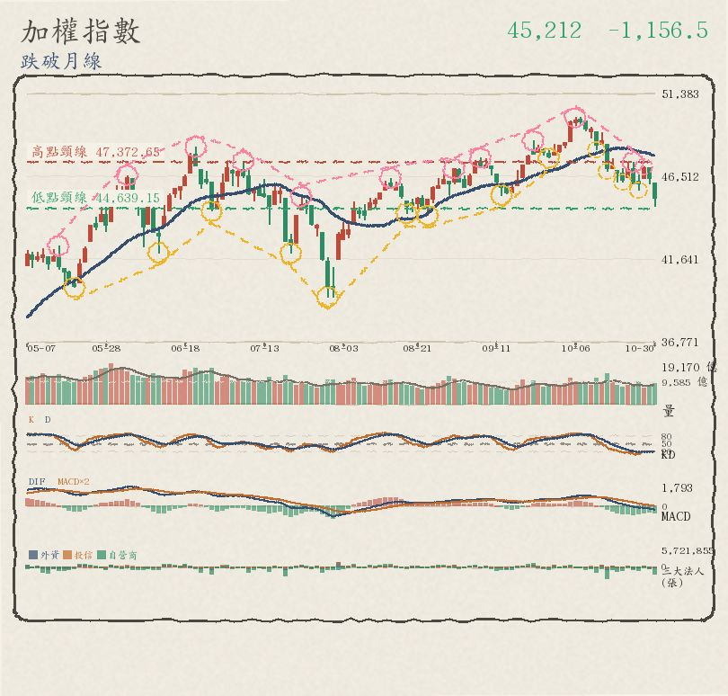
圖說：加權指數日 K（與個股圖相同標記）：黃圈＝轉折低點、粉圈＝轉折高點、虛線小圈＝還沒確認的轉折、藍線＝月線 MA20、水平虛線＝高點／低點頸線。最後一根是資料日當天。
本區塊為公開資料的技術面觀察，不構成投資建議，
不報牌、不預測、不下買賣決策。成交金額為集中市場總成交金額（含 ETF／權證），
與頁首摘要的「上市個股成交金額」口徑不同。標籤是統計，不是評分、也不是推薦。
上市 vs 上櫃（同期快篩）
加權 -2.49% vs 櫃買 -4.42%（同向） → 同向
（兩個市場分開寫，不合併成一個數字；櫃買為 TPEX 公開資料）
櫃買歷史：TPEX 逐日回補 130 根；來源：櫃買中心 www/zh-tw/indexInfo/sectinx（逐日，官方；OpenAPI tpex_index 只回當月）
（TPEX OpenAPI 只回當月，故逐日回補；歷史不足就不算該條均線並標「資料不足」，不用錯數字）
近 20 個交易日大盤狀態回溯（最新在上）（點開看逐日主狀態／量比／量價象限）
用同一支程式回算最近 20 個交易日（主狀態 S1~S8 與量比 20 皆為當日收盤當時的判定，
不是事後調整）；量比 20 未公布的日子寫「—」。
好條件最多的（前 10）
不好條件最多的（前 10）
好條件（7 項）：站上月線、月線向上、底底高、頭頭高、突破頸線、攻擊量（量增＋上漲）、守住今日高檔（距今日高點 1% 內）。
不好條件（7 項）：跌破前低、今日下跌、相對大盤弱、在月線之下、貼近今日低點（1% 內）、跌破昨日低點、月線下彎。
兩邊都是同一組日線資料＋盤中即時價算出來的「符合項目數」，只是把方向相反的條件分開數；
條件數不是評分或推薦，不構成投資建議。
逆勢上漲（加權下跌、個股上漲）（37 上市 27／上櫃 10）
盤中爆量（估量比 ≥ 1.5）（18 上市 13／上櫃 5）
跌破前低（線型轉弱）（33 上市 24／上櫃 9）
今日疲弱（跌幅前 10）（10 上市 7／上櫃 3）
逐檔（70 檔，依盤中成交金額排序）
台積電 2330 上市
2335 -35.0（-1.48%）
區間或轉弱 盤中成交值 470.27 億・全榜第 1 名（上市第 1 名）・相對大盤 -0.94
好條件 1/7：守住今日高檔（距今日高點 1% 內）
不好條件 6/7：跌破前低、今日下跌、相對大盤弱、在月線之下、跌破昨日低點、月線下彎
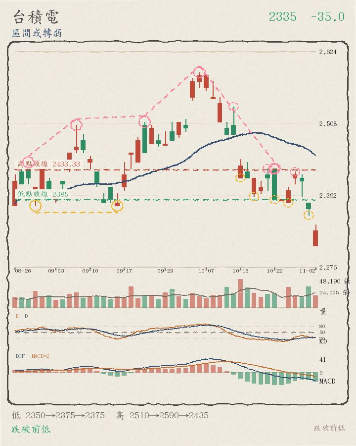
11:31 盤中 2335（-1.48%），比加權指數弱 0.94 個百分點、跌破月線 2465.5，離高點頸線 2433.33 還差 4.0%，轉折還沒走出明顯方向。
- 月線位置：現價 2335 在月線 2465.5 之下（-5.3%）；5 日線 2399 也在月線之下（短均在下）；月線向下
- 量能：以已過交易時間推估，今天成交量約是 20 日均量的 1.50 倍（爆量），比 20 日均量大不少；下跌卻量增，量價背離
- 關鍵價位：已跌破前一個轉折低點；高點頸線 2433.33 還在現價上方 4.0%；前一交易日高點 2380（低於 1.9%）；今天盤中高點 2345（低於 0.4%）；今天盤中低點 2310（高於 1.1%）
- 轉折結構：低點 2350、2375、2375 與高點 2510、2590、2435 都沒有明顯遞增，屬於區間震盪或轉弱；還沒確認的轉折低點 10-27 2380、10-30 2360；還沒確認的轉折高點 10-22 2435、10-28 2430（圖上虛線小圈）
聯發科 2454 上市
3990 +75.0（+1.92%）
底部墊高、未過前高 盤中成交值 318.6 億・全榜第 2 名（上市第 2 名）・相對大盤 +2.46
好條件 2/7：底底高、攻擊量（量增＋上漲）
不好條件 3/7：跌破前低、在月線之下、月線下彎
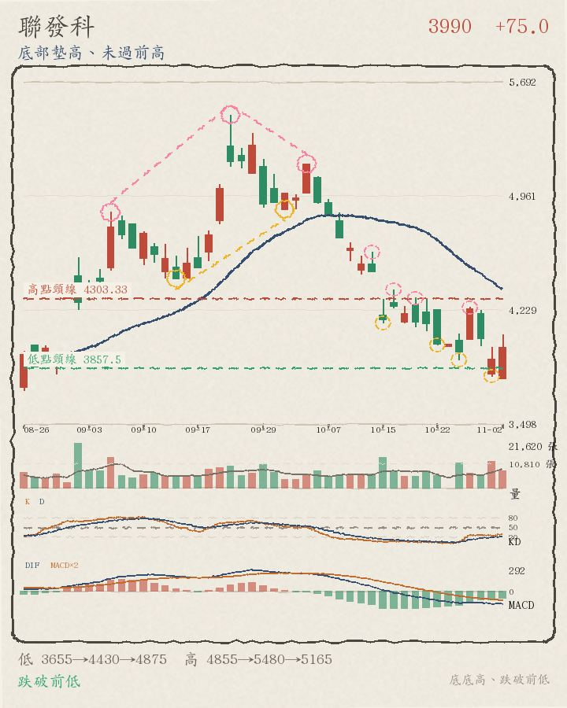
11:31 盤中 3990（+1.92%），比加權指數強 2.46 個百分點、跌破月線 4412.5，離高點頸線 4303.33 還差 7.3%，底部還在墊高（但高點沒同步創高）。
- 月線位置：現價 3990 在月線 4412.5 之下（-9.6%）；5 日線 4033 也在月線之下（短均在下）；月線向下
- 量能：以已過交易時間推估，今天成交量約是 20 日均量的 2.02 倍（爆量），比 20 日均量大不少；上漲又量增，量價配合
- 關鍵價位：已跌破前一個轉折低點；高點頸線 4303.33 還在現價上方 7.3%；前一交易日高點 3990（高於 0.0%）；今天盤中高點 4070（低於 2.0%）；今天盤中低點 3790（高於 5.3%）
- 轉折結構：低點 3655、4430、4875 墊高（底底高），但高點 4855、5480、5165 沒有同步創高；還沒確認的轉折低點 10-27 3910、10-30 3805；還沒確認的轉折高點 10-20 4305、10-28 4245（圖上虛線小圈）
台達電 2308 上市
1335 +0.0（+0.00%）
高點墊高、底部不穩 盤中成交值 189.14 億・全榜第 3 名（上市第 3 名）・相對大盤 +0.54
好條件 2/7：頭頭高、守住今日高檔（距今日高點 1% 內）
不好條件 3/7：跌破前低、在月線之下、月線下彎
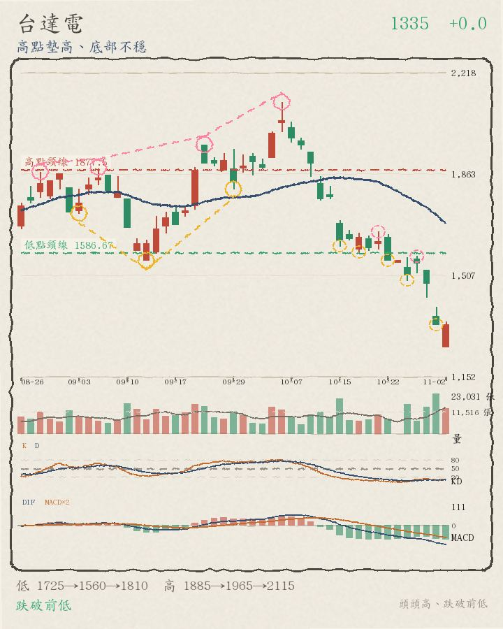
11:31 盤中 1335（+0.00%），比加權指數強 0.54 個百分點、跌破月線 1719.5，離高點頸線 1877.5 還差 28.9%，高點還在墊高（但底部沒同步墊高）。
- 月線位置：現價 1335 在月線 1719.5 之下（-22.4%）；5 日線 1487 也在月線之下（短均在下）；月線向下
- 量能：以已過交易時間推估，今天成交量約是 20 日均量的 2.45 倍（爆量），比 20 日均量大不少
- 關鍵價位：已跌破前一個轉折低點；高點頸線 1877.5 還在現價上方 28.9%；前一交易日高點 1395（低於 4.3%）；今天盤中高點 1345（低於 0.7%）；今天盤中低點 1255（高於 6.4%）
- 轉折結構：高點 1885、1965、2115 墊高（頭頭高），但低點 1725、1560、1810 沒有同步墊高；還沒確認的轉折低點 10-27 1490、10-30 1335；還沒確認的轉折高點 10-21 1660、10-28 1575（圖上虛線小圈）
南亞 1303 上市
304 +8.0（+2.70%）
區間或轉弱 盤中成交值 185.7 億・全榜第 4 名（上市第 4 名）・相對大盤 +3.24
好條件 3/7：站上月線、月線向上、攻擊量（量增＋上漲）
不好條件 0/7：無
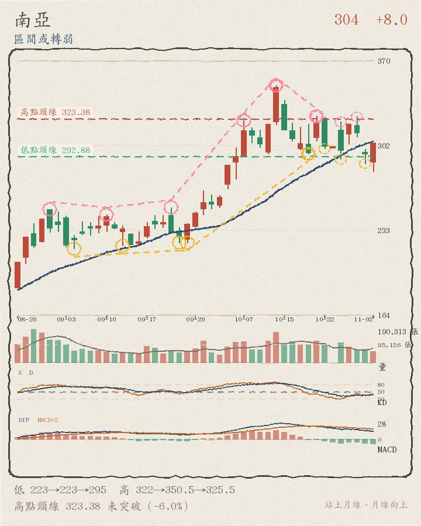
11:31 盤中 304（+2.70%），比加權指數強 3.24 個百分點、站上月線 302.8，離高點頸線 323.38 還差 6.0%，轉折還沒走出明顯方向。
- 月線位置：現價 304 在月線 302.8 之上（+0.4%）；5 日線 305.1 也在月線之上（短均在上）；月線向上
- 量能：以已過交易時間推估，今天成交量約是 20 日均量的 1.10 倍（量增），比 20 日均量大一些；上漲又量增，量價配合
- 關鍵價位：高點頸線 323.38 還沒突破，差 6.0%；前一交易日高點 298.5（高於 1.8%）；今天盤中高點 304（高於 0.0%）；今天盤中低點 280.5（高於 8.4%）
- 轉折結構：低點 223、223、295 與高點 322、350.5、325.5 都沒有明顯遞增，屬於區間震盪或轉弱；還沒確認的轉折低點 10-27 290.5、10-30 287；還沒確認的轉折高點 10-27 321、10-29 325（圖上虛線小圈）
欣興 3037 上市
1005 +16.0（+1.62%）
底部墊高、未過前高 盤中成交值 135.79 億・全榜第 5 名（上市第 5 名）・相對大盤 +2.16
好條件 3/7：底底高、攻擊量（量增＋上漲）、守住今日高檔（距今日高點 1% 內）
不好條件 3/7：跌破前低、在月線之下、月線下彎

11:31 盤中 1005（+1.62%），比加權指數強 2.16 個百分點、跌破月線 1157.45，離高點頸線 1135 還差 11.5%，底部還在墊高（但高點沒同步創高）。
- 月線位置：現價 1005 在月線 1157.45 之下（-13.2%）；5 日線 1054.8 也在月線之下（短均在下）；月線向下
- 量能：以已過交易時間推估，今天成交量約是 20 日均量的 1.47 倍（量增），比 20 日均量大不少；上漲又量增，量價配合
- 關鍵價位：已跌破前一個轉折低點；高點頸線 1135 還在現價上方 11.5%；前一交易日高點 1005（高於 0.0%）；今天盤中高點 1015（低於 1.0%）；今天盤中低點 940（高於 6.9%）
- 轉折結構：低點 873、932、1040 墊高（底底高），但高點 1200、1420、1180 沒有同步創高；還沒確認的轉折低點 10-27 1035、10-30 959；還沒確認的轉折高點 10-27 1145、10-28 1145（圖上虛線小圈）
創意 3443 上市
7390 -245.0（-3.21%）
區間或轉弱 盤中成交值 122.01 億・全榜第 6 名（上市第 6 名）・相對大盤 -2.67
好條件 0/7：無
不好條件 4/7：今日下跌、相對大盤弱、在月線之下、月線下彎

11:31 盤中 7390（-3.21%），比加權指數弱 2.67 個百分點、跌破月線 7940.25，離高點頸線 8477 還差 12.8%，轉折還沒走出明顯方向。
- 月線位置：現價 7390 在月線 7940.25 之下（-6.9%）；5 日線 7692 也在月線之下（短均在下）；月線向下
- 量能：以已過交易時間推估，今天成交量約是 20 日均量的 2.08 倍（爆量），比 20 日均量大不少；下跌卻量增，量價背離
- 關鍵價位：高點頸線 8477 還沒突破，差 12.8%；前一交易日高點 7860（低於 6.0%）；今天盤中高點 7575（低於 2.4%）；今天盤中低點 7115（高於 3.9%）
- 轉折結構：低點 7730、7065、7200 與高點 8545、8750、8490 都沒有明顯遞增，屬於區間震盪或轉弱；還沒確認的轉折低點 10-27 7200、10-30 7220；還沒確認的轉折高點 10-21 8490、10-29 8255（圖上虛線小圈）
景碩 3189 上市
920 -12.0（-1.29%）
底部墊高、未過前高 盤中成交值 120.31 億・全榜第 7 名（上市第 7 名）・相對大盤 -0.75
好條件 3/7：月線向上、底底高、守住今日高檔（距今日高點 1% 內）
不好條件 4/7：跌破前低、今日下跌、相對大盤弱、在月線之下
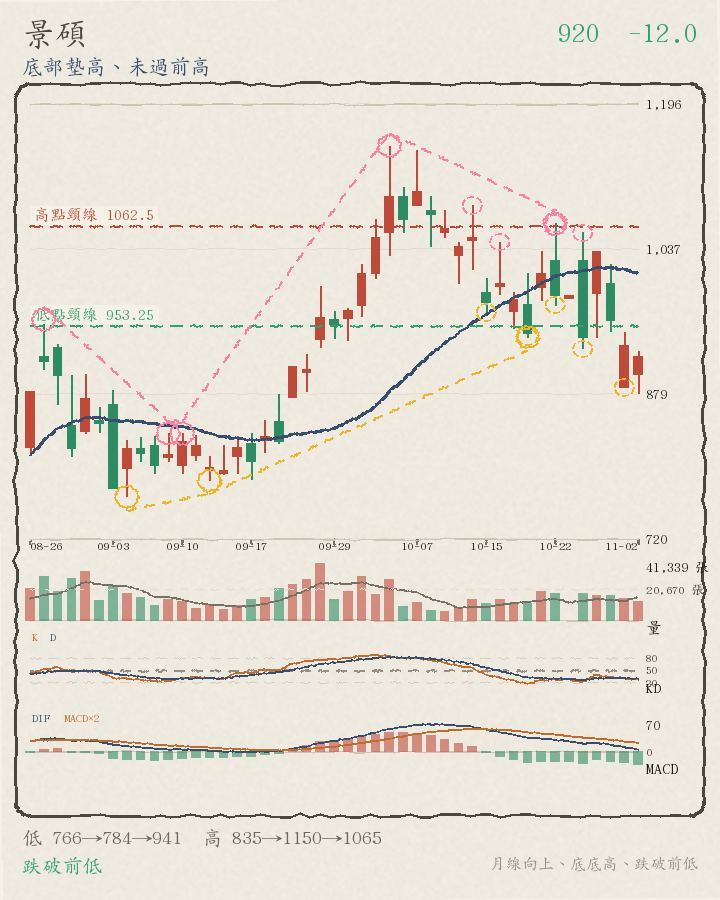
11:31 盤中 920（-1.29%），比加權指數弱 0.75 個百分點、跌破月線 1015.25，離高點頸線 1062.5 還差 13.4%，底部還在墊高（但高點沒同步創高）。
- 月線位置：現價 920 在月線 1015.25 之下（-9.4%）；5 日線 970.6 也在月線之下（短均在下）；月線向上
- 量能：以已過交易時間推估，今天成交量約是 20 日均量的 1.45 倍（量增），比 20 日均量大不少；下跌卻量增，量價背離
- 關鍵價位：已跌破前一個轉折低點；高點頸線 1062.5 還在現價上方 13.4%；前一交易日高點 946（低於 2.7%）；今天盤中高點 925（低於 0.5%）；今天盤中低點 879（高於 4.7%）
- 轉折結構：低點 766、784、941 墊高（底底高），但高點 835、1150、1065 沒有同步創高；還沒確認的轉折低點 10-27 928、10-30 886；還沒確認的轉折高點 10-22 1065、10-27 1055（圖上虛線小圈）
國巨* 2327 上市
505 +3.0（+0.60%）
區間或轉弱 盤中成交值 116.87 億・全榜第 8 名（上市第 8 名）・相對大盤 +1.14
好條件 1/7：守住今日高檔（距今日高點 1% 內）
不好條件 3/7：跌破前低、在月線之下、月線下彎
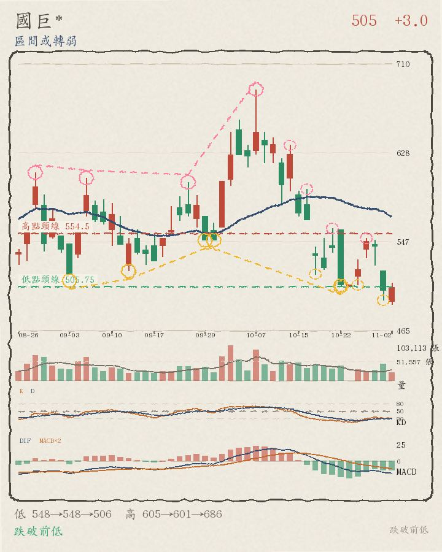
11:31 盤中 505（+0.60%），比加權指數強 1.14 個百分點、跌破月線 574.45，離高點頸線 554.5 還差 8.9%，轉折還沒走出明顯方向。
- 月線位置：現價 505 在月線 574.45 之下（-12.1%）；5 日線 524 也在月線之下（短均在下）；月線向下
- 量能：以已過交易時間推估，今天成交量約是 20 日均量的 0.89 倍（量平），比 20 日均量少一些
- 關鍵價位：已跌破前一個轉折低點；高點頸線 554.5 還在現價上方 8.9%；前一交易日高點 520（低於 2.9%）；今天盤中高點 509（低於 0.8%）；今天盤中低點 489（高於 3.3%）
- 轉折結構：低點 548、548、506 與高點 605、601、686 都沒有明顯遞增，屬於區間震盪或轉弱；還沒確認的轉折低點 10-27 507、10-30 493；還沒確認的轉折高點 10-21 559、10-28 550（圖上虛線小圈）
穩懋 3105 上櫃
579 +1.0（+0.17%）
區間或轉弱 盤中成交值 115.64 億・全榜第 9 名（上櫃第 1 名）・相對大盤 +0.71
好條件 5/7：站上月線、月線向上、突破頸線、攻擊量（量增＋上漲）、守住今日高檔（距今日高點 1% 內）
不好條件 0/7：無
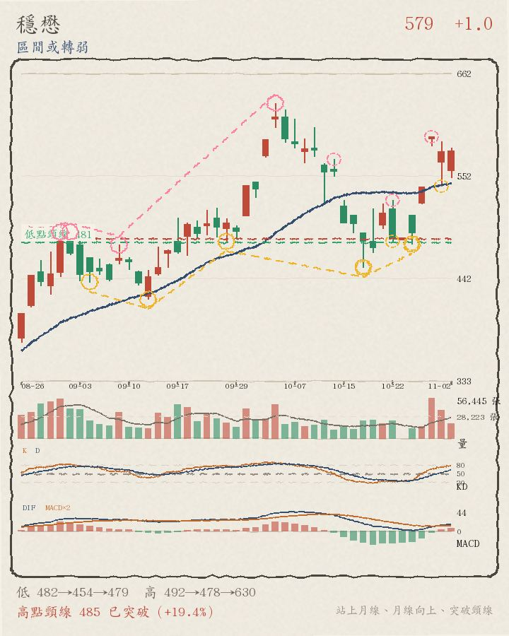
11:31 盤中 579（+0.17%），比加權指數強 0.71 個百分點、站上月線 542.25，已突破高點頸線 485，轉折還沒走出明顯方向。
- 月線位置：現價 579 在月線 542.25 之上（+6.8%）；5 日線 537.8 也在月線之下（短均在下）；月線向上
- 量能：以已過交易時間推估，今天成交量約是 20 日均量的 1.46 倍（量增），比 20 日均量大不少；上漲又量增，量價配合
- 關鍵價位：高點頸線 485 已站上；前一交易日高點 589（低於 1.7%）；今天盤中高點 582（低於 0.5%）；今天盤中低點 550（高於 5.3%）
- 轉折結構：低點 482、454、479 與高點 492、478、630 都沒有明顯遞增，屬於區間震盪或轉弱；還沒確認的轉折低點 10-27 479、10-30 541；還沒確認的轉折高點 10-22 526、10-29 594（圖上虛線小圈）
台燿 6274 上櫃
1240 -25.0（-1.98%）
高點墊高、底部不穩 盤中成交值 112.68 億・全榜第 10 名（上櫃第 2 名）・相對大盤 -1.44
好條件 1/7：頭頭高
不好條件 6/7：跌破前低、今日下跌、相對大盤弱、在月線之下、跌破昨日低點、月線下彎
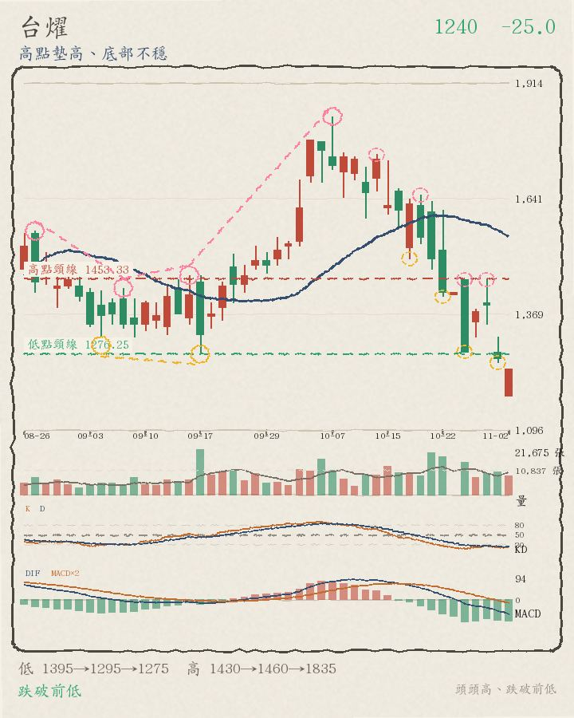
11:31 盤中 1240（-1.98%），比加權指數弱 1.44 個百分點、跌破月線 1567.25，離高點頸線 1453.33 還差 14.7%，高點還在墊高（但底部沒同步墊高）。
- 月線位置：現價 1240 在月線 1567.25 之下（-20.9%）；5 日線 1346 也在月線之下（短均在下）；月線向下
- 量能：以已過交易時間推估，今天成交量約是 20 日均量的 1.49 倍（量增），比 20 日均量大不少；下跌卻量增，量價背離
- 關鍵價位：已跌破前一個轉折低點；高點頸線 1453.33 還在現價上方 14.7%；前一交易日高點 1315（低於 5.7%）；今天盤中高點 1240（高於 0.0%）；今天盤中低點 1175（高於 5.5%）
- 轉折結構：高點 1430、1460、1835 墊高（頭頭高），但低點 1395、1295、1275 沒有同步墊高；還沒確認的轉折低點 10-27 1280、10-30 1255；還沒確認的轉折高點 10-27 1450、10-29 1450（圖上虛線小圈）
南亞科 2408 上市
456.5 +2.0（+0.44%）
區間或轉弱 盤中成交值 106.21 億・全榜第 11 名（上市第 9 名）・相對大盤 +0.98
好條件 2/7：突破頸線、守住今日高檔（距今日高點 1% 內）
不好條件 2/7：在月線之下、月線下彎
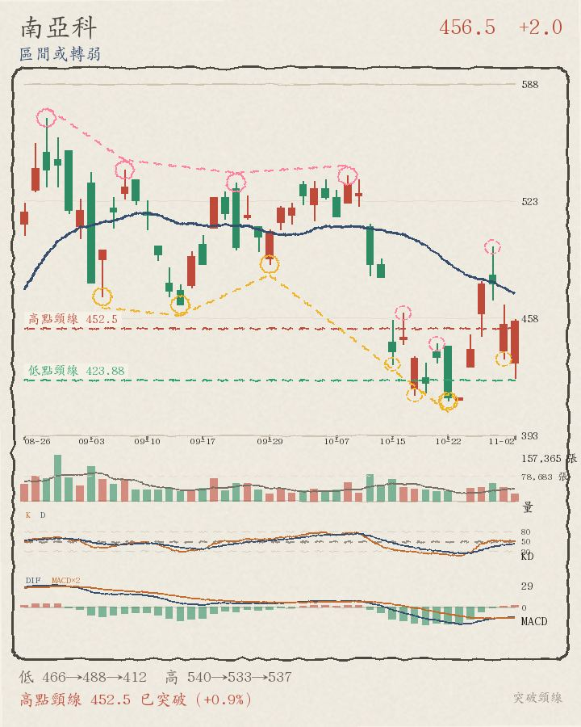
11:31 盤中 456.5（+0.44%），比加權指數強 0.98 個百分點、跌破月線 475.025，已突破高點頸線 452.5，轉折還沒走出明顯方向。
- 月線位置：現價 456.5 在月線 475.025 之下（-3.9%）；5 日線 452.7 也在月線之下（短均在下）；月線向下
- 量能：以已過交易時間推估，今天成交量約是 20 日均量的 0.93 倍（量平），比 20 日均量少一些
- 關鍵價位：高點頸線 452.5 已站上；前一交易日高點 465.5（低於 1.9%）；今天盤中高點 457.5（低於 0.2%）；今天盤中低點 424.5（高於 7.5%）
- 轉折結構：低點 465.5、488、412 與高點 540、533、537 都沒有明顯遞增，屬於區間震盪或轉弱；還沒確認的轉折低點 10-22 412、10-30 435.5；還沒確認的轉折高點 10-21 444、10-29 497.5（圖上虛線小圈）
聯茂 6213 上市
675 -12.0（-1.75%）
高點墊高、底部不穩 盤中成交值 99.95 億・全榜第 12 名（上市第 10 名）・相對大盤 -1.21
好條件 2/7：月線向上、頭頭高
不好條件 4/7：跌破前低、今日下跌、相對大盤弱、在月線之下

11:31 盤中 675（-1.75%），比加權指數弱 1.21 個百分點、跌破月線 767.5，離高點頸線 865.67 還差 22.0%，高點還在墊高（但底部沒同步墊高）。
- 月線位置：現價 675 在月線 767.5 之下（-12.1%）；5 日線 746.6 也在月線之下（短均在下）；月線向上
- 量能：以已過交易時間推估，今天成交量約是 20 日均量的 1.66 倍（爆量），比 20 日均量大不少；下跌卻量增，量價背離
- 關鍵價位：已跌破前一個轉折低點；高點頸線 865.67 還在現價上方 22.0%；前一交易日高點 715（低於 5.6%）；今天盤中高點 675（高於 0.0%）；今天盤中低點 631（高於 7.0%）
- 轉折結構：高點 555、858、885 墊高（頭頭高），但低點 482、731、721 沒有同步墊高；還沒確認的轉折低點 10-27 737、10-30 672；還沒確認的轉折高點 10-27 854、10-29 815（圖上虛線小圈）
聯電 2303 上市
109.5 -2.0（-1.79%）
底部墊高、未過前高 盤中成交值 94.05 億・全榜第 13 名（上市第 11 名）・相對大盤 -1.25
好條件 2/7：底底高、守住今日高檔（距今日高點 1% 內）
不好條件 5/7：跌破前低、今日下跌、相對大盤弱、在月線之下、月線下彎
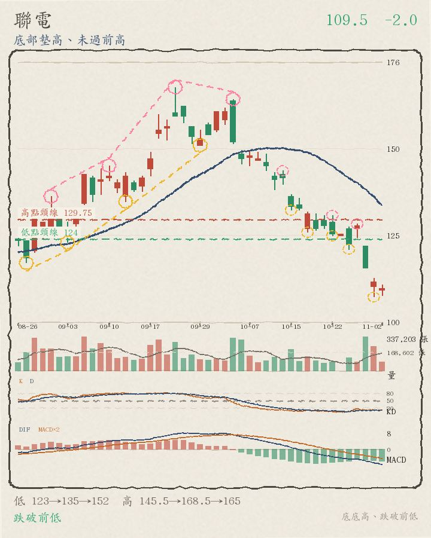
11:31 盤中 109.5（-1.79%），比加權指數弱 1.25 個百分點、跌破月線 136.475，離高點頸線 129.75 還差 15.6%，底部還在墊高（但高點沒同步創高）。
- 月線位置：現價 109.5 在月線 136.475 之下（-19.8%）；5 日線 120.6 也在月線之下（短均在下）；月線向下
- 量能：以已過交易時間推估，今天成交量約是 20 日均量的 1.06 倍（量平），比 20 日均量大一些
- 關鍵價位：已跌破前一個轉折低點；高點頸線 129.75 還在現價上方 15.6%；前一交易日高點 112.5（低於 2.7%）；今天盤中高點 110.5（低於 0.9%）；今天盤中低點 107.5（高於 1.9%）
- 轉折結構：低點 123、135、151.5 墊高（底底高），但高點 145.5、168.5、165 沒有同步創高；還沒確認的轉折低點 10-27 121、10-30 107；還沒確認的轉折高點 10-22 131、10-28 128.5（圖上虛線小圈）
台光電 2383 上市
4705 +30.0（+0.64%）
底部墊高、未過前高 盤中成交值 83.28 億・全榜第 14 名（上市第 12 名）・相對大盤 +1.18
好條件 3/7：底底高、攻擊量（量增＋上漲）、守住今日高檔（距今日高點 1% 內）
不好條件 3/7：跌破前低、在月線之下、月線下彎
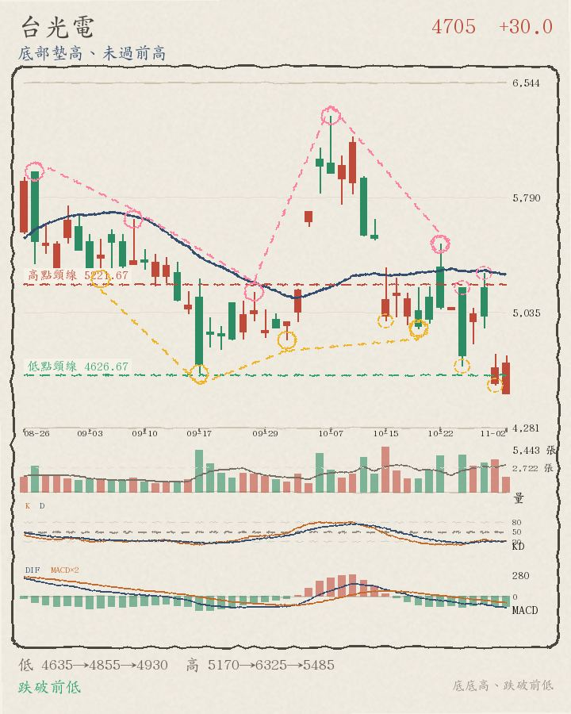
11:31 盤中 4705（+0.64%），比加權指數強 1.18 個百分點、跌破月線 5298.25，離高點頸線 5221.67 還差 9.9%，底部還在墊高（但高點沒同步創高）。
- 月線位置：現價 4705 在月線 5298.25 之下（-11.2%）；5 日線 4906 也在月線之下（短均在下）；月線向下
- 量能：以已過交易時間推估，今天成交量約是 20 日均量的 1.15 倍（量增），比 20 日均量大不少；上漲又量增，量價配合
- 關鍵價位：已跌破前一個轉折低點；高點頸線 5221.67 還在現價上方 9.9%；前一交易日高點 4760（低於 1.2%）；今天盤中高點 4750（低於 0.9%）；今天盤中低點 4500（高於 4.6%）
- 轉折結構：低點 4635、4855、4930 墊高（底底高），但高點 5170、6325、5485 沒有同步創高；還沒確認的轉折低點 10-27 4685、10-30 4560；還沒確認的轉折高點 10-27 5200、10-29 5295（圖上虛線小圈）
日月光投控 3711 上市
676 +8.0（+1.20%）
高點墊高、底部不穩 盤中成交值 83.14 億・全榜第 15 名（上市第 13 名）・相對大盤 +1.74
好條件 3/7：頭頭高、攻擊量（量增＋上漲）、守住今日高檔（距今日高點 1% 內）
不好條件 2/7：在月線之下、月線下彎
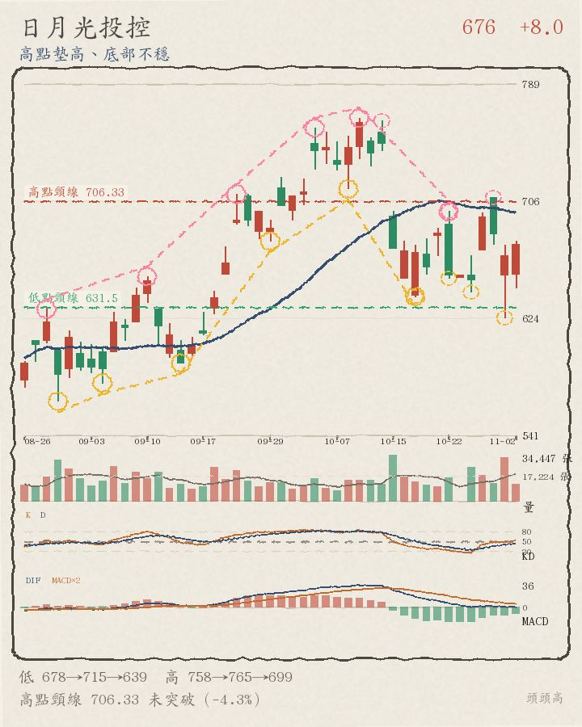
11:31 盤中 676（+1.20%），比加權指數強 1.74 個百分點、跌破月線 699.85，離高點頸線 706.33 還差 4.3%，高點還在墊高（但底部沒同步墊高）。
- 月線位置：現價 676 在月線 699.85 之下（-3.4%）；5 日線 670.2 也在月線之下（短均在下）；月線向下
- 量能：以已過交易時間推估，今天成交量約是 20 日均量的 1.45 倍（量增），比 20 日均量大不少；上漲又量增，量價配合
- 關鍵價位：高點頸線 706.33 還沒突破，差 4.3%；前一交易日高點 675（高於 0.1%）；今天盤中高點 678（低於 0.3%）；今天盤中低點 645（高於 4.8%）
- 轉折結構：高點 758、765、699 墊高（頭頭高），但低點 678、715、639 沒有同步墊高；還沒確認的轉折低點 10-27 642、10-30 624；還沒確認的轉折高點 10-22 699、10-29 709（圖上虛線小圈）
鴻海 2317 上市
251.5 +6.0（+2.44%）
區間或轉弱 盤中成交值 81.82 億・全榜第 16 名（上市第 14 名）・相對大盤 +2.98
好條件 3/7：站上月線、攻擊量（量增＋上漲）、守住今日高檔（距今日高點 1% 內）
不好條件 1/7：月線下彎

11:31 盤中 251.5（+2.44%），比加權指數強 2.98 個百分點、站上月線 247.025，離高點頸線 259 還差 2.9%，轉折還沒走出明顯方向。
- 月線位置：現價 251.5 在月線 247.025 之上（+1.8%）；5 日線 247.5 也在月線之上（短均在上）；月線向下
- 量能：以已過交易時間推估，今天成交量約是 20 日均量的 1.44 倍（量增），比 20 日均量大不少；上漲又量增，量價配合
- 關鍵價位：高點頸線 259 還沒突破，差 2.9%；前一交易日高點 246（高於 2.2%）；今天盤中高點 252（低於 0.2%）；今天盤中低點 242.5（高於 3.7%）
- 轉折結構：低點 243.5、247、237 與高點 259、257、266.5 都沒有明顯遞增，屬於區間震盪或轉弱；還沒確認的轉折低點 10-27 244、10-30 240；還沒確認的轉折高點 10-22 250.5、10-29 253.5（圖上虛線小圈）
富喬 1815 上櫃
133 +6.5（+5.14%）
底部墊高、未過前高 盤中成交值 76.14 億・全榜第 17 名（上櫃第 3 名）・相對大盤 +5.68
好條件 3/7：月線向上、底底高、守住今日高檔（距今日高點 1% 內）
不好條件 1/7：在月線之下
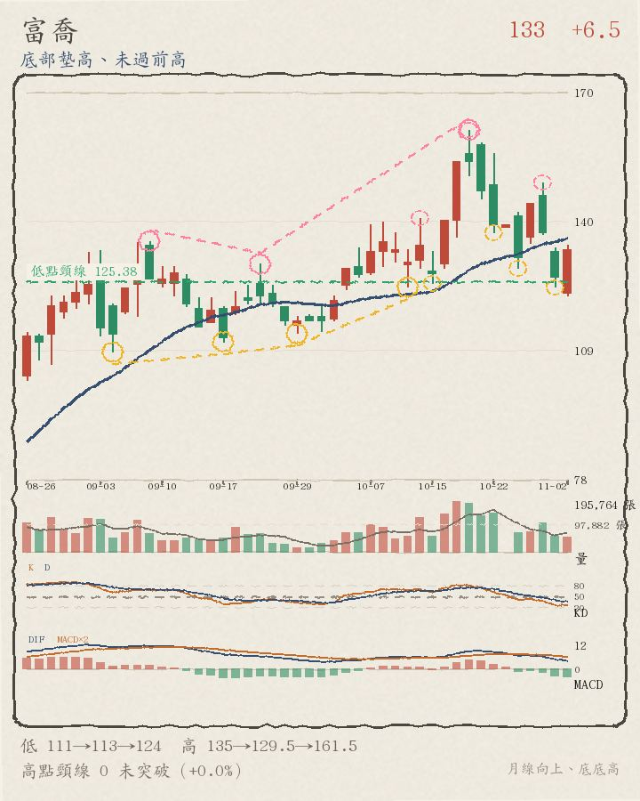
11:31 盤中 133（+5.14%），比加權指數強 5.68 個百分點、跌破月線 134.8，底部還在墊高（但高點沒同步創高）。
- 月線位置：現價 133 在月線 134.8 之下（-1.3%）；5 日線 135.5 也在月線之上（短均在上）；月線向上
- 量能：以已過交易時間推估，今天成交量約是 20 日均量的 1.07 倍（量平），比 20 日均量大一些
- 關鍵價位：前一交易日高點 133.5（低於 0.4%）；今天盤中高點 134（低於 0.7%）；今天盤中低點 122（高於 9.0%）
- 轉折結構：低點 111、113、124 墊高（底底高），但高點 135、129.5、161.5 沒有同步創高；還沒確認的轉折低點 10-27 128.5、10-30 124；還沒確認的轉折高點 10-20 161.5、10-29 149（圖上虛線小圈）
南電 8046 上市
1200 +10.0（+0.84%）
底部墊高、未過前高 盤中成交值 75.48 億・全榜第 18 名（上市第 15 名）・相對大盤 +1.38
好條件 3/7：月線向上、底底高、攻擊量（量增＋上漲）
不好條件 1/7：在月線之下
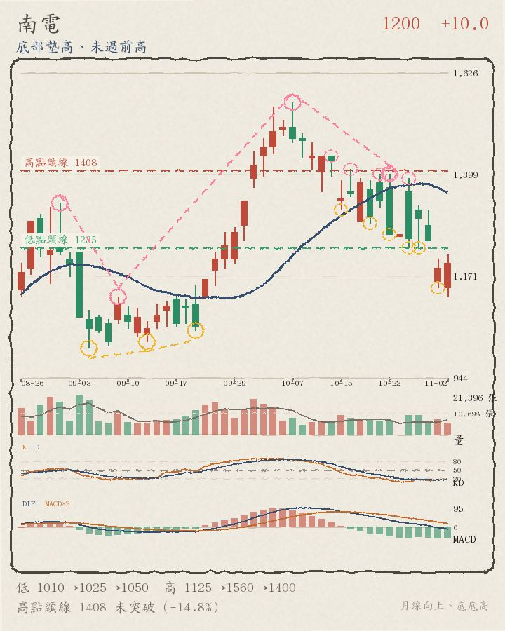
11:31 盤中 1200（+0.84%），比加權指數強 1.38 個百分點、跌破月線 1369.75，離高點頸線 1408 還差 14.8%，底部還在墊高（但高點沒同步創高）。
- 月線位置：現價 1200 在月線 1369.75 之下（-12.4%）；5 日線 1252 也在月線之下（短均在下）；月線向上
- 量能：以已過交易時間推估，今天成交量約是 20 日均量的 1.18 倍（量增），比 20 日均量大不少；上漲又量增，量價配合
- 關鍵價位：高點頸線 1408 還沒突破，差 14.8%；前一交易日高點 1210（低於 0.8%）；今天盤中高點 1220（低於 1.6%）；今天盤中低點 1125（高於 6.7%）
- 轉折結構：低點 1010、1025、1050 墊高（底底高），但高點 1125、1560、1400 沒有同步創高；還沒確認的轉折低點 10-28 1235、10-30 1145；還沒確認的轉折高點 10-22 1400、10-27 1390（圖上虛線小圈）
大立光 3008 上市
5475 +45.0（+0.83%）
區間或轉弱 盤中成交值 67.89 億・全榜第 19 名（上市第 16 名）・相對大盤 +1.37
好條件 1/7：守住今日高檔（距今日高點 1% 內）
不好條件 3/7：跌破前低、在月線之下、月線下彎
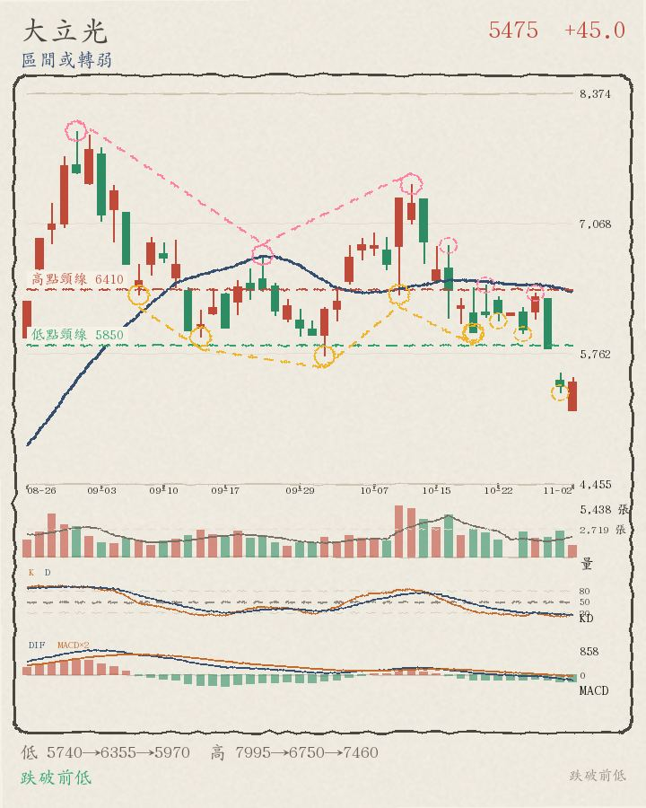
11:31 盤中 5475（+0.83%），比加權指數強 1.37 個百分點、跌破月線 6419.5，離高點頸線 6410 還差 14.6%，轉折還沒走出明顯方向。
- 月線位置：現價 5475 在月線 6419.5 之下（-14.7%）；5 日線 5951 也在月線之下（短均在下）；月線向下
- 量能：以已過交易時間推估，今天成交量約是 20 日均量的 0.83 倍（量平），比 20 日均量少很多；上漲但量縮，量價背離
- 關鍵價位：已跌破前一個轉折低點；高點頸線 6410 還在現價上方 14.6%；前一交易日高點 5570（低於 1.7%）；今天盤中高點 5520（低於 0.8%）；今天盤中低點 5190（高於 5.5%）
- 轉折結構：低點 5740、6355、5970 與高點 7995、6750、7460 都沒有明顯遞增，屬於區間震盪或轉弱；還沒確認的轉折低點 10-27 5960、10-30 5370；還沒確認的轉折高點 10-21 6450、10-28 6370（圖上虛線小圈）
華邦電 2344 上市
163.5 -1.0（-0.61%）
區間或轉弱 盤中成交值 65.52 億・全榜第 20 名（上市第 17 名）・相對大盤 -0.07
好條件 1/7：守住今日高檔（距今日高點 1% 內）
不好條件 4/7：今日下跌、相對大盤弱、在月線之下、月線下彎
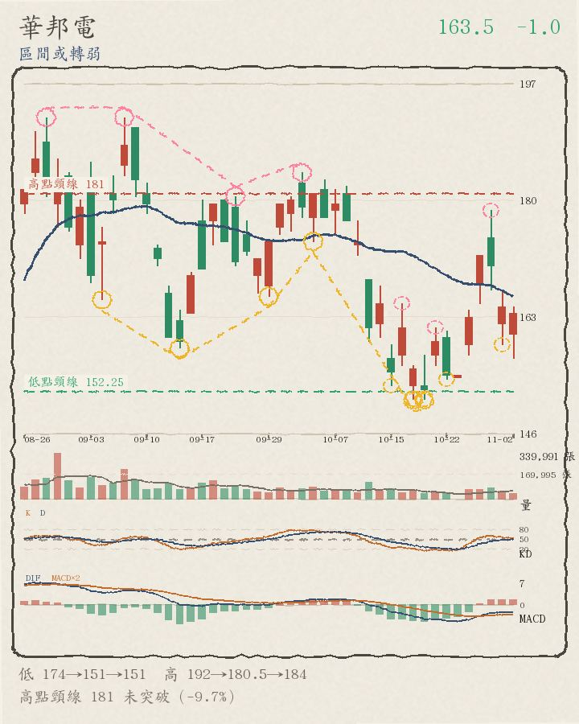
11:31 盤中 163.5（-0.61%），比加權指數弱 0.07 個百分點、跌破月線 166.875，離高點頸線 181 還差 9.7%，轉折還沒走出明顯方向。
- 月線位置：現價 163.5 在月線 166.875 之下（-2.0%）；5 日線 164.9 也在月線之下（短均在下）；月線向下
- 量能：以已過交易時間推估，今天成交量約是 20 日均量的 1.09 倍（量平），比 20 日均量大一些
- 關鍵價位：高點頸線 181 還沒突破，差 9.7%；前一交易日高點 167（低於 2.1%）；今天盤中高點 164.5（低於 0.6%）；今天盤中低點 157（高於 4.1%）
- 轉折結構：低點 174、151、151 與高點 192、180.5、184 都沒有明顯遞增，屬於區間震盪或轉弱；還沒確認的轉折低點 10-22 154、10-30 159；還沒確認的轉折高點 10-21 161.5、10-29 178.5（圖上虛線小圈）
量平
↑ 回上方清單
禾伸堂 3026 上市
657 -50.0（-7.07%）
區間或轉弱 盤中成交值 64.19 億・全榜第 21 名（上市第 18 名）・相對大盤 -6.53
好條件 0/7：無
不好條件 6/7：跌破前低、今日下跌、相對大盤弱、在月線之下、跌破昨日低點、月線下彎
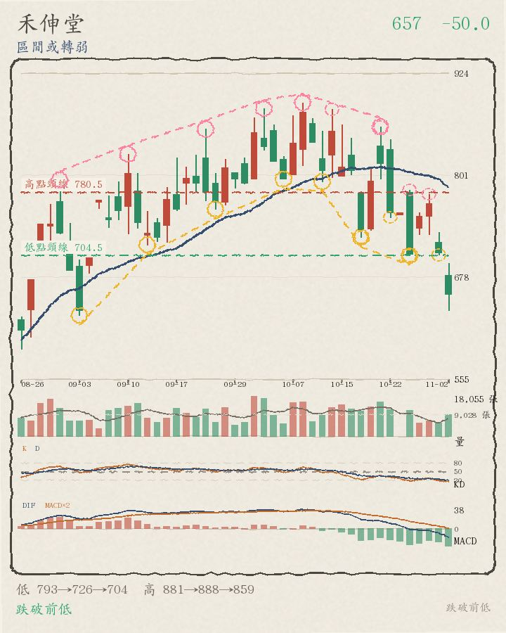
11:31 盤中 657（-7.07%），比加權指數弱 6.53 個百分點、跌破月線 796，離高點頸線 780.5 還差 15.8%，轉折還沒走出明顯方向。
- 月線位置：現價 657 在月線 796 之下（-17.5%）；5 日線 737.4 也在月線之下（短均在下）；月線向下
- 量能：以已過交易時間推估，今天成交量約是 20 日均量的 1.53 倍（爆量），比 20 日均量大不少；下跌卻量增，量價背離
- 關鍵價位：已跌破前一個轉折低點；高點頸線 780.5 還在現價上方 15.8%；前一交易日高點 732（低於 10.2%）；今天盤中高點 695（低於 5.5%）；今天盤中低點 638（高於 3.0%）
- 轉折結構：低點 793、726、704 與高點 881、888、859 都沒有明顯遞增，屬於區間震盪或轉弱；還沒確認的轉折低點 10-27 704、10-30 705；還沒確認的轉折高點 10-27 783、10-29 778（圖上虛線小圈）
臻鼎-KY 4958 上市
495 +9.0（+1.85%）
底部墊高、未過前高 盤中成交值 63.54 億・全榜第 22 名（上市第 19 名）・相對大盤 +2.39
好條件 3/7：月線向上、底底高、守住今日高檔（距今日高點 1% 內）
不好條件 2/7：跌破前低、在月線之下
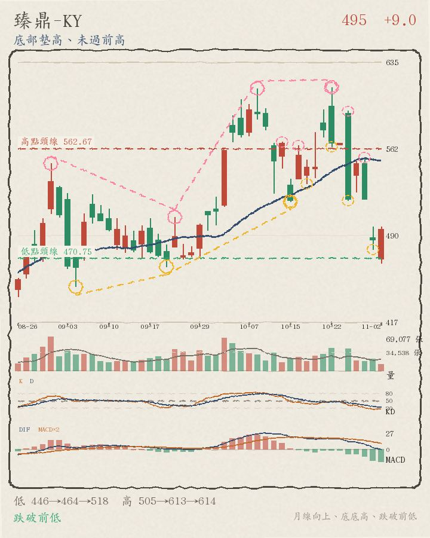
11:31 盤中 495（+1.85%），比加權指數強 2.39 個百分點、跌破月線 553.3，離高點頸線 562.67 還差 12.0%，底部還在墊高（但高點沒同步創高）。
- 月線位置：現價 495 在月線 553.3 之下（-10.5%）；5 日線 528.6 也在月線之下（短均在下）；月線向上
- 量能：以已過交易時間推估，今天成交量約是 20 日均量的 0.70 倍（量縮），比 20 日均量少很多；上漲但量縮，量價背離
- 關鍵價位：已跌破前一個轉折低點；高點頸線 562.67 還在現價上方 12.0%；前一交易日高點 497（低於 0.4%）；今天盤中高點 497（低於 0.4%）；今天盤中低點 466.5（高於 6.1%）
- 轉折結構：低點 446.5、463.5、518 墊高（底底高），但高點 505、613、614 沒有同步創高；還沒確認的轉折低點 10-27 519、10-30 478；還沒確認的轉折高點 10-27 594、10-29 555（圖上虛線小圈）
金像電 2368 上市
1070 +50.0（+4.90%）
區間或轉弱 盤中成交值 57.67 億・全榜第 23 名（上市第 20 名）・相對大盤 +5.44
好條件 0/7：無
不好條件 3/7：跌破前低、在月線之下、月線下彎
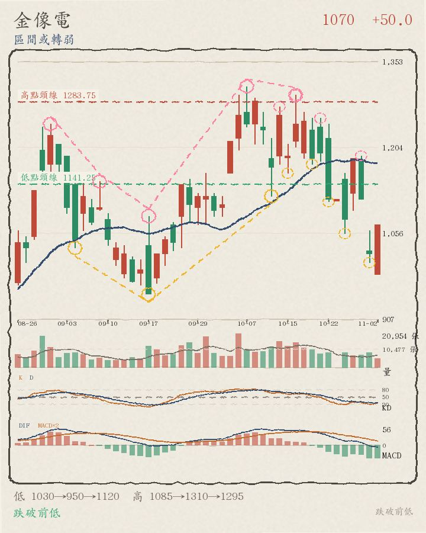
11:31 盤中 1070（+4.90%），比加權指數強 5.44 個百分點、跌破月線 1178.25，離高點頸線 1283.75 還差 16.7%，轉折還沒走出明顯方向。
- 月線位置：現價 1070 在月線 1178.25 之下（-9.2%）；5 日線 1103 也在月線之下（短均在下）；月線向下
- 量能：以已過交易時間推估，今天成交量約是 20 日均量的 0.86 倍（量平），比 20 日均量少一些
- 關鍵價位：已跌破前一個轉折低點；高點頸線 1283.75 還在現價上方 16.7%；前一交易日高點 1060（高於 0.9%）；今天盤中高點 1070（高於 0.0%）；今天盤中低點 984（高於 8.7%）
- 轉折結構：低點 1030、950、1120 與高點 1085、1310、1295 都沒有明顯遞增，屬於區間震盪或轉弱；還沒確認的轉折低點 10-27 1055、10-30 1005；還沒確認的轉折高點 10-21 1255、10-29 1190（圖上虛線小圈）
華新科 2492 上市
368 -13.0（-3.41%）
高點墊高、底部不穩 盤中成交值 56.67 億・全榜第 24 名（上市第 21 名）・相對大盤 -2.87
好條件 2/7：月線向上、頭頭高
不好條件 4/7：今日下跌、相對大盤弱、在月線之下、跌破昨日低點
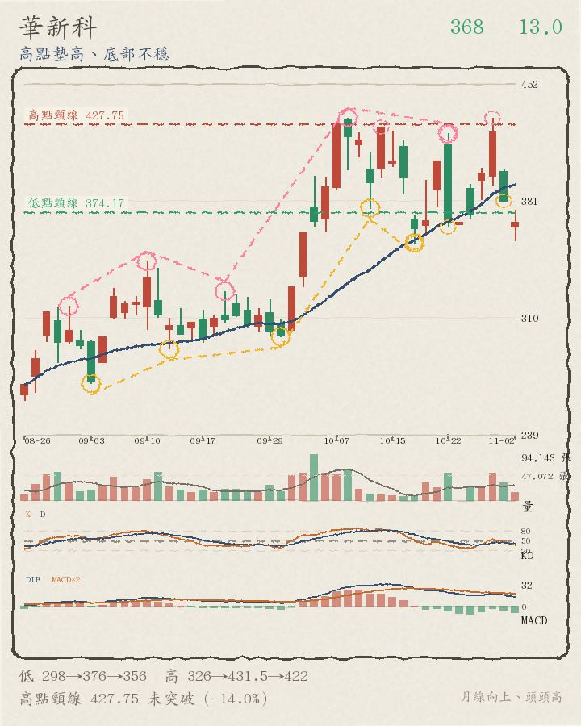
11:31 盤中 368（-3.41%），比加權指數弱 2.87 個百分點、跌破月線 389.1，離高點頸線 427.75 還差 14.0%，高點還在墊高（但底部沒同步墊高）。
- 月線位置：現價 368 在月線 389.1 之下（-5.4%）；5 日線 388.5 也在月線之下（短均在下）；月線向上
- 量能：以已過交易時間推估，今天成交量約是 20 日均量的 0.77 倍（量平），比 20 日均量少很多
- 關鍵價位：高點頸線 427.75 還沒突破，差 14.0%；前一交易日高點 400（低於 8.0%）；今天盤中高點 375.5（低於 2.0%）；今天盤中低點 357（高於 3.1%）
- 轉折結構：高點 326、431.5、422 墊高（頭頭高），但低點 298.5、376.5、355.5 沒有同步墊高；還沒確認的轉折低點 10-22 365、10-30 381；還沒確認的轉折高點 10-22 422、10-29 431.5（圖上虛線小圈）
環球晶 6488 上櫃
762 +6.0（+0.79%）
區間或轉弱 盤中成交值 52.23 億・全榜第 25 名（上櫃第 4 名）・相對大盤 +1.33
好條件 0/7：無
不好條件 3/7：跌破前低、在月線之下、月線下彎
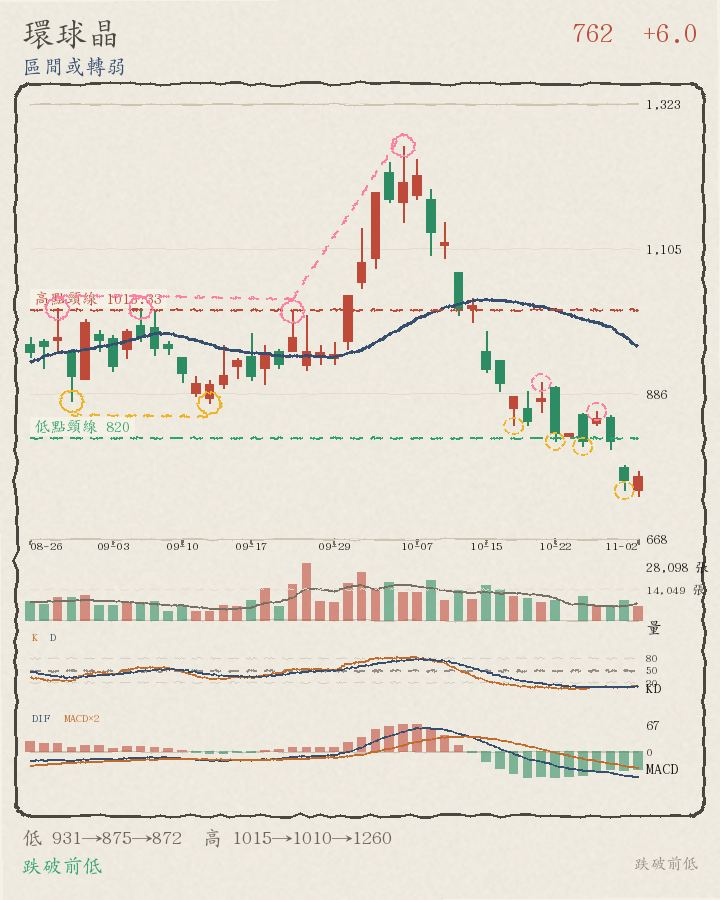
11:31 盤中 762（+0.79%），比加權指數強 1.33 個百分點、跌破月線 973.55，離高點頸線 1013.33 還差 24.8%，轉折還沒走出明顯方向。
- 月線位置：現價 762 在月線 973.55 之下（-21.7%）；5 日線 811.8 也在月線之下（短均在下）；月線向下
- 量能：以已過交易時間推估，今天成交量約是 20 日均量的 0.92 倍（量平），比 20 日均量少一些
- 關鍵價位：已跌破前一個轉折低點；高點頸線 1013.33 還在現價上方 24.8%；前一交易日高點 779（低於 2.2%）；今天盤中高點 770（低於 1.0%）；今天盤中低點 731（高於 4.2%）
- 轉折結構：低點 931、875、872 與高點 1015、1010、1260 都沒有明顯遞增，屬於區間震盪或轉弱；還沒確認的轉折低點 10-27 807、10-30 741；還沒確認的轉折高點 10-21 903、10-28 860（圖上虛線小圈）
友達 2409 上市
30.95 +0.3（+0.98%）
底部墊高、未過前高 盤中成交值 50.31 億・全榜第 26 名（上市第 22 名）・相對大盤 +1.52
好條件 1/7：底底高
不好條件 3/7：跌破前低、在月線之下、月線下彎

11:31 盤中 30.95（+0.98%），比加權指數強 1.52 個百分點、跌破月線 36.038，離高點頸線 37.08 還差 16.5%，底部還在墊高（但高點沒同步創高）。
- 月線位置：現價 30.95 在月線 36.038 之下（-14.1%）；5 日線 33.82 也在月線之下（短均在下）；月線向下
- 量能：以已過交易時間推估，今天成交量約是 20 日均量的 0.69 倍（量縮），比 20 日均量少很多；上漲但量縮，量價背離
- 關鍵價位：已跌破前一個轉折低點；高點頸線 37.08 還在現價上方 16.5%；前一交易日高點 31.55（低於 1.9%）；今天盤中高點 30.95（高於 0.0%）；今天盤中低點 29.1（高於 6.4%）
- 轉折結構：低點 27.75、33.75、34.45 墊高（底底高），但高點 36.65、43.55、37.8 沒有同步創高；還沒確認的轉折低點 10-27 33.45、10-30 30.65；還沒確認的轉折高點 10-27 36.55、10-29 36.65（圖上虛線小圈）
群創 3481 上市
45.05 +2.5（+5.88%）
區間或轉弱 盤中成交值 50.06 億・全榜第 27 名（上市第 23 名）・相對大盤 +6.42
好條件 2/7：攻擊量（量增＋上漲）、守住今日高檔（距今日高點 1% 內）
不好條件 3/7：跌破前低、在月線之下、月線下彎
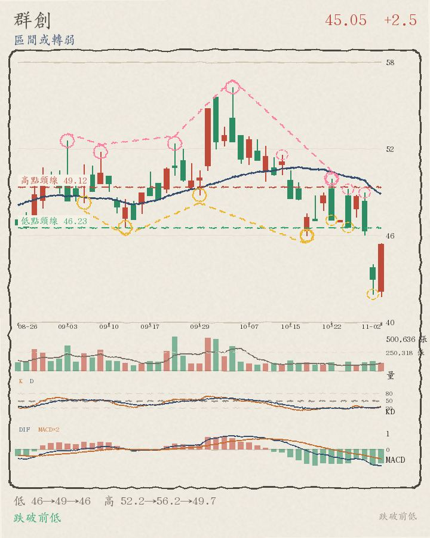
11:31 盤中 45.05（+5.88%），比加權指數強 6.42 個百分點、跌破月線 48.987，離高點頸線 49.12 還差 8.3%，轉折還沒走出明顯方向。
- 月線位置：現價 45.05 在月線 48.987 之下（-8.0%）；5 日線 46 也在月線之下（短均在下）；月線向下
- 量能：以已過交易時間推估，今天成交量約是 20 日均量的 1.22 倍（量增），比 20 日均量大不少；上漲又量增，量價配合
- 關鍵價位：已跌破前一個轉折低點；高點頸線 49.12 還在現價上方 8.3%；前一交易日高點 43.6（高於 3.3%）；今天盤中高點 45.1（低於 0.1%）；今天盤中低點 41.3（高於 9.1%）
- 轉折結構：低點 46.25、48.55、45.65 與高點 52.2、56.2、49.7 都沒有明顯遞增，屬於區間震盪或轉弱；還沒確認的轉折低點 10-27 46.25、10-30 41.5；還沒確認的轉折高點 10-27 48.95、10-29 48.7（圖上虛線小圈）
聯亞 3081 上櫃
2375 +5.0（+0.21%）
高點墊高、底部不穩 盤中成交值 48.9 億・全榜第 28 名（上櫃第 5 名）・相對大盤 +0.75
好條件 2/7：頭頭高、攻擊量（量增＋上漲）
不好條件 2/7：在月線之下、月線下彎

11:31 盤中 2375（+0.21%），比加權指數強 0.75 個百分點、跌破月線 2694，離高點頸線 2931.67 還差 19.0%，高點還在墊高（但底部沒同步墊高）。
- 月線位置：現價 2375 在月線 2694 之下（-11.8%）；5 日線 2480 也在月線之下（短均在下）；月線向下
- 量能：以已過交易時間推估，今天成交量約是 20 日均量的 1.14 倍（量增），比 20 日均量大一些；上漲又量增，量價配合
- 關鍵價位：高點頸線 2931.67 還沒突破，差 19.0%；前一交易日高點 2445（低於 2.9%）；今天盤中高點 2435（低於 2.5%）；今天盤中低點 2290（高於 3.7%）
- 轉折結構：高點 2930、2950、3210 墊高（頭頭高），但低點 2650、2585、2365 沒有同步墊高；還沒確認的轉折低點 10-22 2365、10-30 2320；還沒確認的轉折高點 10-21 2640、10-29 2795（圖上虛線小圈）
健策 3653 上市
6220 -95.0（-1.50%）
區間或轉弱 盤中成交值 48.83 億・全榜第 29 名（上市第 24 名）・相對大盤 -0.96
好條件 1/7：守住今日高檔（距今日高點 1% 內）
不好條件 4/7：今日下跌、相對大盤弱、在月線之下、月線下彎
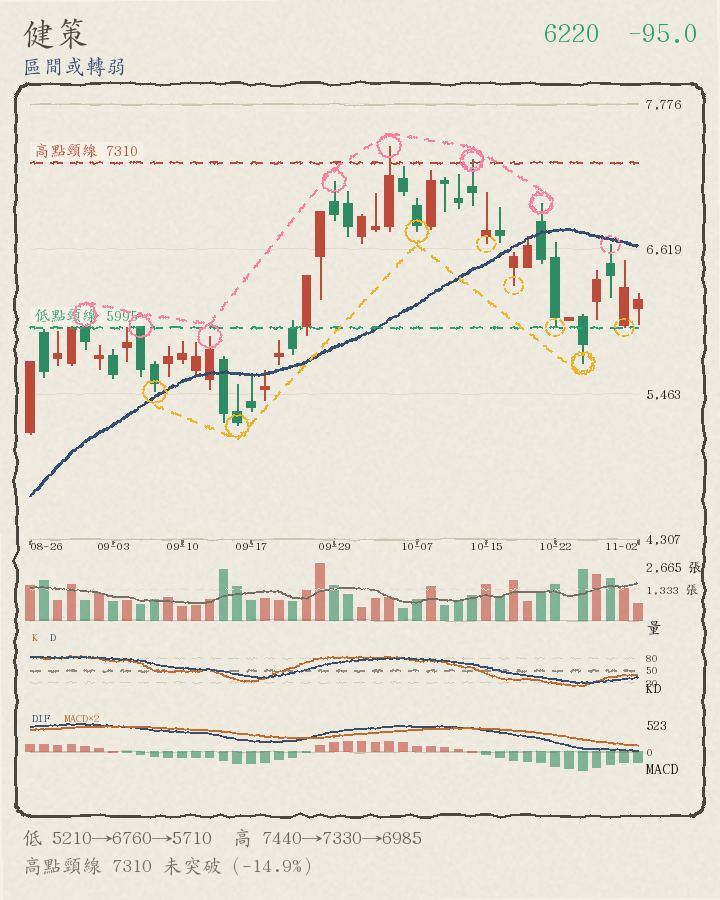
11:31 盤中 6220（-1.50%），比加權指數弱 0.96 個百分點、跌破月線 6674.25，離高點頸線 7310 還差 14.9%，轉折還沒走出明顯方向。
- 月線位置：現價 6220 在月線 6674.25 之下（-6.8%）；5 日線 6205 也在月線之下（短均在下）；月線向下
- 量能：以已過交易時間推估，今天成交量約是 20 日均量的 1.09 倍（量平），比 20 日均量大一些
- 關鍵價位：高點頸線 7310 還沒突破，差 14.9%；前一交易日高點 6525（低於 4.7%）；今天盤中高點 6265（低於 0.7%）；今天盤中低點 6020（高於 3.3%）
- 轉折結構：低點 5210、6760、5710 與高點 7440、7330、6985 都沒有明顯遞增，屬於區間震盪或轉弱；還沒確認的轉折低點 10-27 5710、10-30 5995；還沒確認的轉折高點 10-21 6985、10-29 6655（圖上虛線小圈）
量平
↑ 回上方清單
雙鴻 3324 上櫃
1395 +65.0（+4.89%）
區間或轉弱 盤中成交值 43.87 億・全榜第 30 名（上櫃第 6 名）・相對大盤 +5.43
好條件 1/7：攻擊量（量增＋上漲）
不好條件 2/7：在月線之下、月線下彎
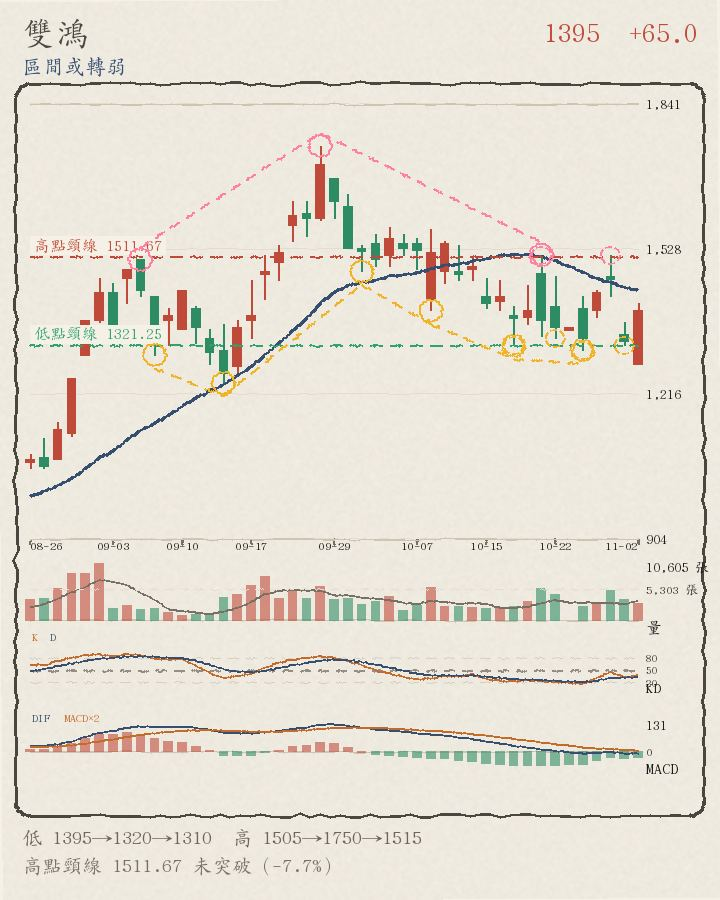
11:31 盤中 1395（+4.89%），比加權指數強 5.43 個百分點、跌破月線 1446.5，離高點頸線 1511.67 還差 7.7%，轉折還沒走出明顯方向。
- 月線位置：現價 1395 在月線 1446.5 之下（-3.6%）；5 日線 1385 也在月線之下（短均在下）；月線向下
- 量能：以已過交易時間推估，今天成交量約是 20 日均量的 1.65 倍（爆量），比 20 日均量大不少；上漲又量增，量價配合
- 關鍵價位：高點頸線 1511.67 還沒突破，差 7.7%；前一交易日高點 1370（高於 1.8%）；今天盤中高點 1410（低於 1.1%）；今天盤中低點 1280（高於 9.0%）
- 轉折結構：低點 1395、1320、1310 與高點 1505、1750、1515 都沒有明顯遞增，屬於區間震盪或轉弱；還沒確認的轉折低點 10-27 1310、10-30 1320；還沒確認的轉折高點 10-21 1515、10-29 1515（圖上虛線小圈）
致茂 2360 上市
1690 -65.0（-3.70%）
區間或轉弱 盤中成交值 41.37 億・全榜第 31 名（上市第 25 名）・相對大盤 -3.16
好條件 0/7：無
不好條件 6/7：跌破前低、今日下跌、相對大盤弱、在月線之下、跌破昨日低點、月線下彎
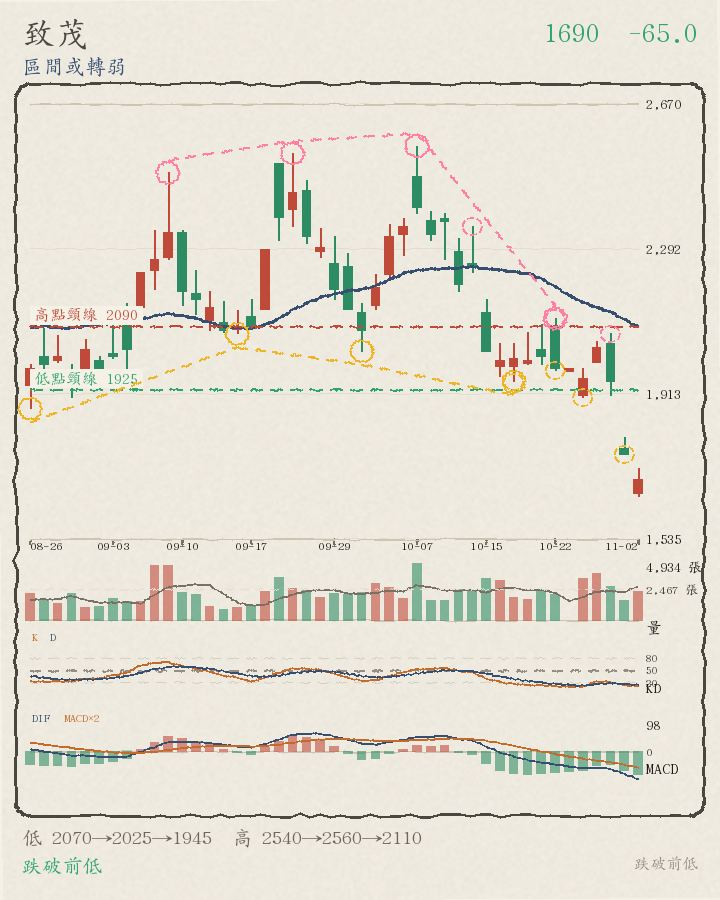
11:31 盤中 1690（-3.70%），比加權指數弱 3.16 個百分點、跌破月線 2109，離高點頸線 2090 還差 19.1%，轉折還沒走出明顯方向。
- 月線位置：現價 1690 在月線 2109 之下（-19.9%）；5 日線 1934 也在月線之下（短均在下）；月線向下
- 量能：以已過交易時間推估，今天成交量約是 20 日均量的 1.60 倍（爆量），比 20 日均量大不少；下跌卻量增，量價背離
- 關鍵價位：已跌破前一個轉折低點；高點頸線 2090 還在現價上方 19.1%；前一交易日高點 1800（低於 6.1%）；今天盤中高點 1720（低於 1.7%）；今天盤中低點 1645（高於 2.7%）
- 轉折結構：低點 2070、2025、1945 與高點 2540、2560、2110 都沒有明顯遞增，屬於區間震盪或轉弱；還沒確認的轉折低點 10-27 1905、10-30 1755；還沒確認的轉折高點 10-22 2110、10-29 2070（圖上虛線小圈）
光寶科 2301 上市
236.5 -4.0（-1.66%）
區間或轉弱 盤中成交值 40.67 億・全榜第 32 名（上市第 26 名）・相對大盤 -1.12
好條件 0/7：無
不好條件 5/7：跌破前低、今日下跌、相對大盤弱、在月線之下、月線下彎
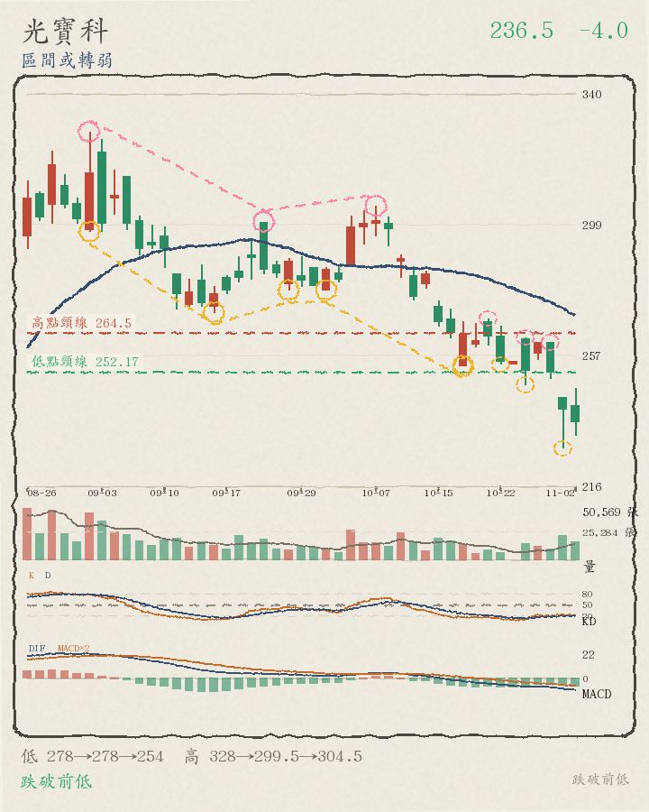
11:31 盤中 236.5（-1.66%），比加權指數弱 1.12 個百分點、跌破月線 272.35，離高點頸線 264.5 還差 10.6%，轉折還沒走出明顯方向。
- 月線位置：現價 236.5 在月線 272.35 之下（-13.2%）；5 日線 252.4 也在月線之下（短均在下）；月線向下
- 量能：以已過交易時間推估，今天成交量約是 20 日均量的 2.16 倍（爆量），比 20 日均量大不少；下跌卻量增，量價背離
- 關鍵價位：已跌破前一個轉折低點；高點頸線 264.5 還在現價上方 10.6%；前一交易日高點 244（低於 3.1%）；今天盤中高點 247（低於 4.3%）；今天盤中低點 232（高於 1.9%）
- 轉折結構：低點 278、278、254 與高點 328、299.5、304.5 都沒有明顯遞增，屬於區間震盪或轉弱；還沒確認的轉折低點 10-27 248、10-30 228；還沒確認的轉折高點 10-27 263、10-29 261.5（圖上虛線小圈）
智邦 2345 上市
1620 +5.0（+0.31%）
區間或轉弱 盤中成交值 40.32 億・全榜第 33 名（上市第 27 名）・相對大盤 +0.85
好條件 0/7：無
不好條件 3/7：跌破前低、在月線之下、月線下彎
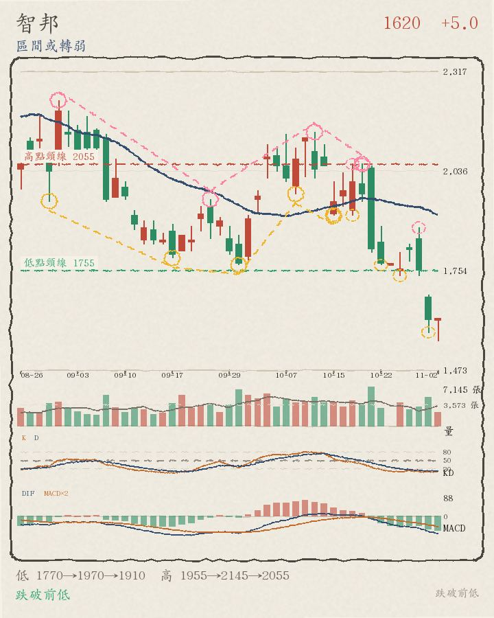
11:31 盤中 1620（+0.31%），比加權指數強 0.85 個百分點、跌破月線 1925.5，離高點頸線 2055 還差 21.2%，轉折還沒走出明顯方向。
- 月線位置：現價 1620 在月線 1925.5 之下（-15.9%）；5 日線 1744 也在月線之下（短均在下）；月線向下
- 量能：以已過交易時間推估，今天成交量約是 20 日均量的 0.98 倍（量平），跟 20 日均量差不多
- 關鍵價位：已跌破前一個轉折低點；高點頸線 2055 還在現價上方 21.2%；前一交易日高點 1685（低於 3.9%）；今天盤中高點 1620（高於 0.0%）；今天盤中低點 1555（高於 4.2%）
- 轉折結構：低點 1770、1970、1910 與高點 1955、2145、2055 都沒有明顯遞增，屬於區間震盪或轉弱；還沒確認的轉折低點 10-27 1740、10-30 1580；還沒確認的轉折高點 10-20 2055、10-29 1875（圖上虛線小圈）
緯穎 6669 上市
1815 +5.0（+0.28%）
區間或轉弱 盤中成交值 38.64 億・全榜第 34 名（上市第 28 名）・相對大盤 +0.82
好條件 1/7：守住今日高檔（距今日高點 1% 內）
不好條件 2/7：在月線之下、月線下彎
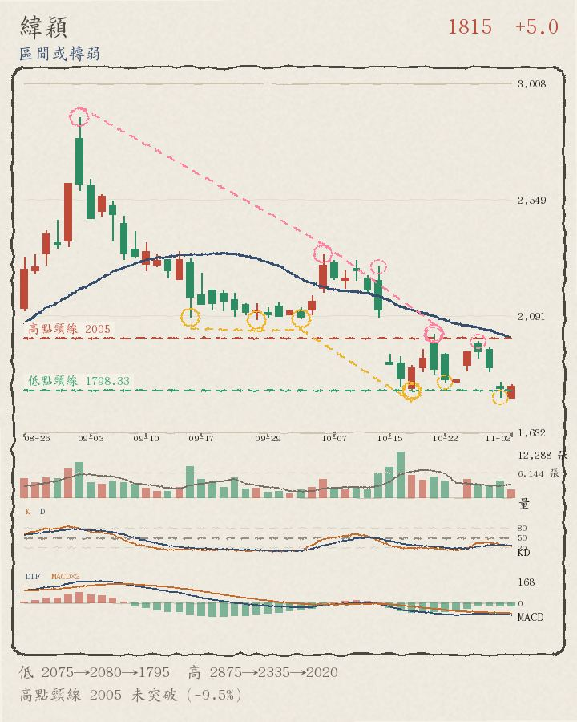
11:31 盤中 1815（+0.28%），比加權指數強 0.82 個百分點、跌破月線 2020.75，離高點頸線 2005 還差 9.5%，轉折還沒走出明顯方向。
- 月線位置：現價 1815 在月線 2020.75 之下（-10.2%）；5 日線 1887 也在月線之下（短均在下）；月線向下
- 量能：以已過交易時間推估，今天成交量約是 20 日均量的 0.90 倍（量平），比 20 日均量少一些
- 關鍵價位：高點頸線 2005 還沒突破，差 9.5%；前一交易日高點 1830（低於 0.8%）；今天盤中高點 1820（低於 0.3%）；今天盤中低點 1765（高於 2.8%）
- 轉折結構：低點 2075、2080、1795 與高點 2875、2335、2020 都沒有明顯遞增，屬於區間震盪或轉弱；還沒確認的轉折低點 10-22 1830、10-30 1770；還沒確認的轉折高點 10-21 2020、10-28 1990（圖上虛線小圈）
奇鋐 3017 上市
3090 -5.0（-0.16%）
區間或轉弱 盤中成交值 38.22 億・全榜第 35 名（上市第 29 名）・相對大盤 +0.38
好條件 0/7：無
不好條件 3/7：今日下跌、在月線之下、月線下彎
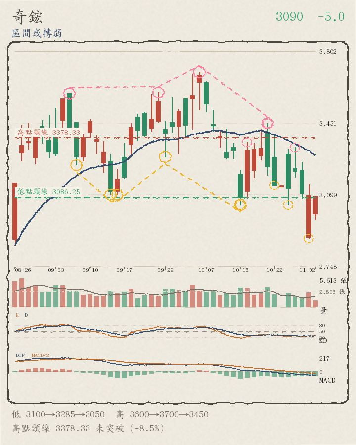
11:31 盤中 3090（-0.16%），比加權指數強 0.38 個百分點、跌破月線 3315，離高點頸線 3378.33 還差 8.5%，轉折還沒走出明顯方向。
- 月線位置：現價 3090 在月線 3315 之下（-6.8%）；5 日線 3138 也在月線之下（短均在下）；月線向下
- 量能：以已過交易時間推估，今天成交量約是 20 日均量的 0.77 倍（量平），比 20 日均量少很多
- 關鍵價位：高點頸線 3378.33 還沒突破，差 8.5%；前一交易日高點 3150（低於 1.9%）；今天盤中高點 3090（高於 0.0%）；今天盤中低點 2980（高於 3.7%）
- 轉折結構：低點 3100、3285、3050 與高點 3600、3700、3450 都沒有明顯遞增，屬於區間震盪或轉弱；還沒確認的轉折低點 10-27 3050、10-30 2885；還沒確認的轉折高點 10-21 3450、10-28 3330（圖上虛線小圈）
量平
↑ 回上方清單
群聯 8299 上櫃
1885 -45.0（-2.33%）
區間或轉弱 盤中成交值 35.08 億・全榜第 36 名（上櫃第 7 名）・相對大盤 -1.79
好條件 0/7：無
不好條件 5/7：今日下跌、相對大盤弱、在月線之下、跌破昨日低點、月線下彎
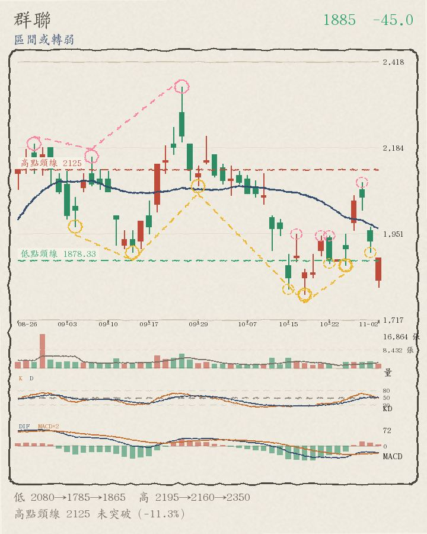
11:31 盤中 1885（-2.33%），比加權指數弱 1.79 個百分點、跌破月線 1976.5，離高點頸線 2125 還差 11.3%，轉折還沒走出明顯方向。
- 月線位置：現價 1885 在月線 1976.5 之下（-4.6%）；5 日線 1962 也在月線之下（短均在下）；月線向下
- 量能：以已過交易時間推估，今天成交量約是 20 日均量的 1.38 倍（量增），比 20 日均量大不少；下跌卻量增，量價背離
- 關鍵價位：高點頸線 2125 還沒突破，差 11.3%；前一交易日高點 1970（低於 4.3%）；今天盤中高點 1885（高於 0.0%）；今天盤中低點 1805（高於 4.4%）
- 轉折結構：低點 2080、1785、1865 與高點 2195、2160、2350 都沒有明顯遞增，屬於區間震盪或轉弱；還沒確認的轉折低點 10-27 1865、10-30 1900；還沒確認的轉折高點 10-22 1945、10-29 2090（圖上虛線小圈）
量增
↑ 回上方清單
力積電 6770 上市
66 -0.6（-0.90%）
區間或轉弱 盤中成交值 32.62 億・全榜第 37 名（上市第 30 名）・相對大盤 -0.36
好條件 1/7：守住今日高檔（距今日高點 1% 內）
不好條件 4/7：今日下跌、相對大盤弱、在月線之下、月線下彎
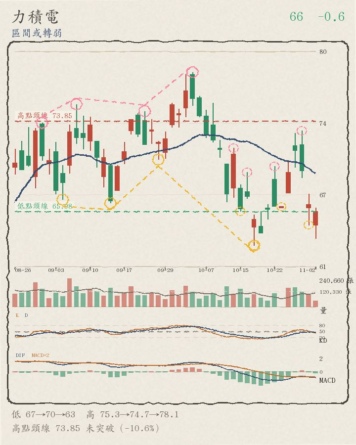
11:31 盤中 66（-0.90%），比加權指數弱 0.36 個百分點、跌破月線 69.725，離高點頸線 73.85 還差 10.6%，轉折還沒走出明顯方向。
- 月線位置：現價 66 在月線 69.725 之下（-5.3%）；5 日線 68.64 也在月線之下（短均在下）；月線向下
- 量能：以已過交易時間推估，今天成交量約是 20 日均量的 0.78 倍（量平），比 20 日均量少很多
- 關鍵價位：高點頸線 73.85 還沒突破，差 10.6%；前一交易日高點 67.5（低於 2.2%）；今天盤中高點 66.3（低於 0.5%）；今天盤中低點 63.6（高於 3.8%）
- 轉折結構：低點 66.7、70.5、63 與高點 75.3、74.7、78.1 都沒有明顯遞增，屬於區間震盪或轉弱；還沒確認的轉折低點 10-23 66.4、10-30 64.8；還沒確認的轉折高點 10-22 69.9、10-29 73（圖上虛線小圈）
量平
↑ 回上方清單
高力 8996 上市
1480 +45.0（+3.14%）
區間或轉弱 盤中成交值 31.14 億・全榜第 38 名（上市第 31 名）・相對大盤 +3.68
好條件 1/7：守住今日高檔（距今日高點 1% 內）
不好條件 2/7：在月線之下、月線下彎
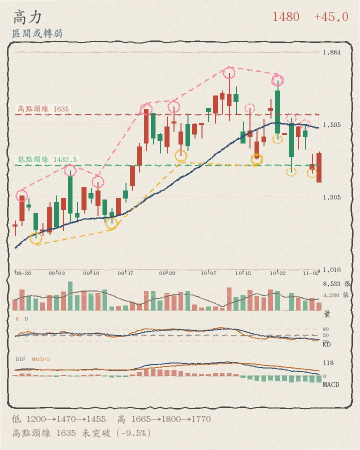
11:31 盤中 1480（+3.14%），比加權指數強 3.68 個百分點、跌破月線 1585.75，離高點頸線 1635 還差 9.5%，轉折還沒走出明顯方向。
- 月線位置：現價 1480 在月線 1585.75 之下（-6.7%）；5 日線 1518 也在月線之下（短均在下）；月線向下
- 量能：以已過交易時間推估，今天成交量約是 20 日均量的 0.99 倍（量平），跟 20 日均量差不多
- 關鍵價位：高點頸線 1635 還沒突破，差 9.5%；前一交易日高點 1475（高於 0.3%）；今天盤中高點 1485（低於 0.3%）；今天盤中低點 1365（高於 8.4%）
- 轉折結構：低點 1200、1470、1455 與高點 1665、1800、1770 都沒有明顯遞增，屬於區間震盪或轉弱；還沒確認的轉折低點 10-27 1405、10-30 1400；還沒確認的轉折高點 10-27 1620、10-29 1595（圖上虛線小圈）
晶豪科 3006 上市
261.5 -15.5（-5.60%）
高點墊高、底部不穩 盤中成交值 31.06 億・全榜第 39 名（上市第 32 名）・相對大盤 -5.06
好條件 2/7：站上月線、頭頭高
不好條件 4/7：今日下跌、相對大盤弱、跌破昨日低點、月線下彎
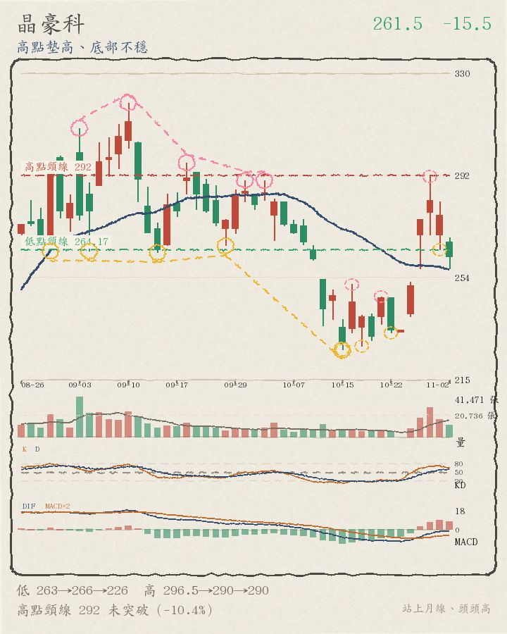
11:31 盤中 261.5（-5.60%），比加權指數弱 5.06 個百分點、站上月線 257.625，離高點頸線 292 還差 10.4%，高點還在墊高（但底部沒同步墊高）。
- 月線位置：現價 261.5 在月線 257.625 之上（+1.5%）；5 日線 263.9 也在月線之上（短均在上）；月線向下
- 量能：以已過交易時間推估，今天成交量約是 20 日均量的 2.27 倍（爆量），比 20 日均量大不少；下跌卻量增，量價背離
- 關鍵價位：高點頸線 292 還沒突破，差 10.4%；前一交易日高點 282（低於 7.3%）；今天盤中高點 268.5（低於 2.6%）；今天盤中低點 257（高於 1.8%）
- 轉折結構：高點 296.5、290、290 墊高（頭頭高），但低點 263、265.5、226.5 沒有同步墊高；還沒確認的轉折低點 10-22 233、10-30 264；還沒確認的轉折高點 10-21 246.5、10-29 291.5（圖上虛線小圈）
玉晶光 3406 上市
1035 -50.0（-4.61%）
高點墊高、底部不穩 盤中成交值 30.38 億・全榜第 40 名（上市第 33 名）・相對大盤 -4.07
好條件 2/7：月線向上、頭頭高
不好條件 4/7：今日下跌、相對大盤弱、在月線之下、跌破昨日低點
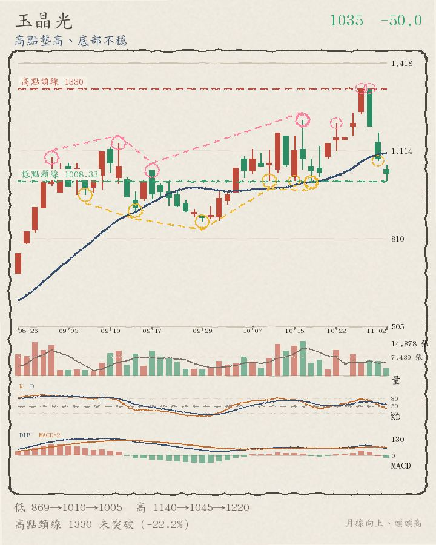
11:31 盤中 1035（-4.61%），比加權指數弱 4.07 個百分點、跌破月線 1101.8，離高點頸線 1330 還差 22.2%，高點還在墊高（但底部沒同步墊高）。
- 月線位置：現價 1035 在月線 1101.8 之下（-6.1%）；5 日線 1197 也在月線之上（短均在上）；月線向上
- 量能：以已過交易時間推估，今天成交量約是 20 日均量的 0.70 倍（量縮），比 20 日均量少很多
- 關鍵價位：高點頸線 1330 還沒突破，差 22.2%；前一交易日高點 1175（低於 11.9%）；今天盤中高點 1065（低於 2.8%）；今天盤中低點 1010（高於 2.5%）
- 轉折結構：高點 1140、1045、1220 墊高（頭頭高），但低點 869、1010、1005 沒有同步墊高；還沒確認的轉折低點 10-19 1005、10-30 1080；還沒確認的轉折高點 10-28 1330、10-29 1330（圖上虛線小圈）
台玻 1802 上市
63.4 +1.1（+1.77%）
區間或轉弱 盤中成交值 29.54 億・全榜第 41 名（上市第 34 名）・相對大盤 +2.31
好條件 2/7：月線向上、守住今日高檔（距今日高點 1% 內）
不好條件 1/7：在月線之下
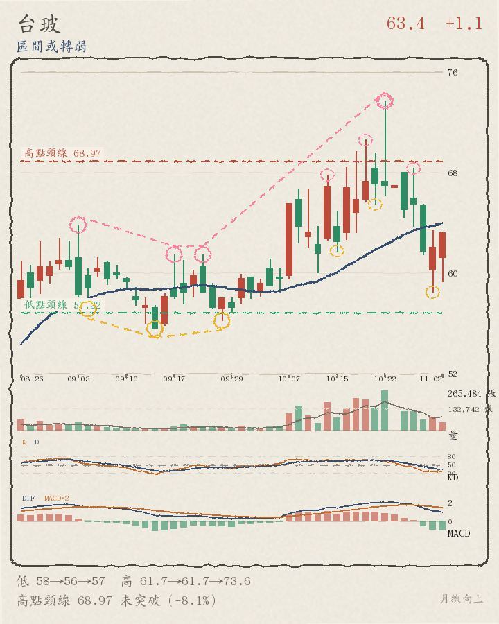
11:31 盤中 63.4（+1.77%），比加權指數強 2.31 個百分點、跌破月線 63.94，離高點頸線 68.97 還差 8.1%，轉折還沒走出明顯方向。
- 月線位置：現價 63.4 在月線 63.94 之下（-0.8%）；5 日線 64.44 也在月線之上（短均在上）；月線向上
- 量能：以已過交易時間推估，今天成交量約是 20 日均量的 0.77 倍（量平），比 20 日均量少很多；上漲但量縮，量價背離
- 關鍵價位：高點頸線 68.97 還沒突破，差 8.1%；前一交易日高點 63.6（低於 0.3%）；今天盤中高點 63.5（低於 0.2%）；今天盤中低點 59.6（高於 6.4%）
- 轉折結構：低點 57.5、56、56.6 與高點 61.7、61.7、73.6 都沒有明顯遞增，屬於區間震盪或轉弱；還沒確認的轉折低點 10-21 65.6、10-30 58.8；還沒確認的轉折高點 10-22 73.6、10-28 68.4（圖上虛線小圈）
嘉澤 3533 上市
1845 -15.0（-0.81%）
區間或轉弱 盤中成交值 28.71 億・全榜第 42 名（上市第 35 名）・相對大盤 -0.27
好條件 2/7：月線向上、守住今日高檔（距今日高點 1% 內）
不好條件 3/7：今日下跌、相對大盤弱、在月線之下
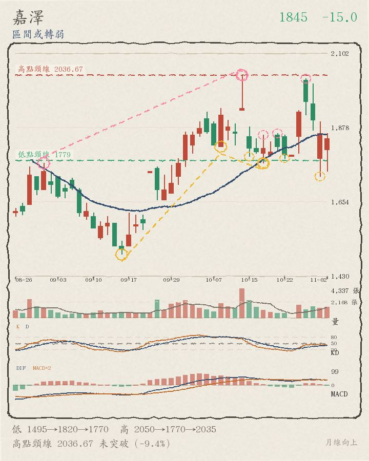
11:31 盤中 1845（-0.81%），比加權指數弱 0.27 個百分點、跌破月線 1857.75，離高點頸線 2036.67 還差 9.4%，轉折還沒走出明顯方向。
- 月線位置：現價 1845 在月線 1857.75 之下（-0.7%）；5 日線 1887 也在月線之上（短均在上）；月線向上
- 量能：以已過交易時間推估，今天成交量約是 20 日均量的 1.67 倍（爆量），比 20 日均量大不少；下跌卻量增，量價背離
- 關鍵價位：高點頸線 2036.67 還沒突破，差 9.4%；前一交易日高點 1895（低於 2.6%）；今天盤中高點 1860（低於 0.8%）；今天盤中低點 1745（高於 5.7%）
- 轉折結構：低點 1495、1820、1770 與高點 2050、1770、2035 都沒有明顯遞增，屬於區間震盪或轉弱；還沒確認的轉折低點 10-22 1785、10-30 1730；還沒確認的轉折高點 10-21 1860、10-28 2025（圖上虛線小圈）
GIS-KY 6456 上市
97.9 +5.6（+6.07%）
高點墊高、底部不穩 盤中成交值 28.37 億・全榜第 43 名（上市第 36 名）・相對大盤 +6.61
好條件 4/7：站上月線、月線向上、頭頭高、攻擊量（量增＋上漲）
不好條件 0/7：無
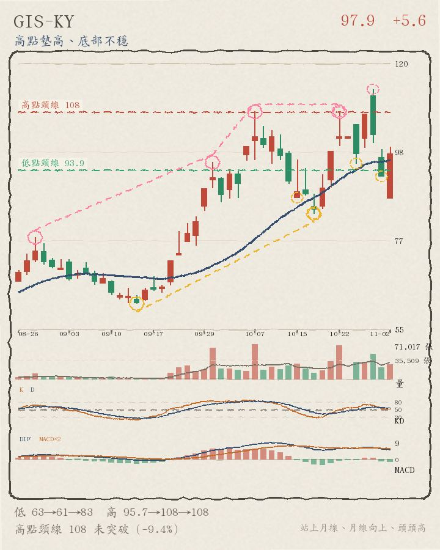
11:31 盤中 97.9（+6.07%），比加權指數強 6.61 個百分點、站上月線 95.84，離高點頸線 108 還差 9.4%，高點還在墊高（但底部沒同步墊高）。
- 月線位置：現價 97.9 在月線 95.84 之上（+2.1%）；5 日線 100.42 也在月線之上（短均在上）；月線向上
- 量能：以已過交易時間推估，今天成交量約是 20 日均量的 1.65 倍（爆量），比 20 日均量大不少；上漲又量增，量價配合
- 關鍵價位：高點頸線 108 還沒突破，差 9.4%；前一交易日高點 98.9（低於 1.0%）；今天盤中高點 99.5（低於 1.6%）；今天盤中低點 87（高於 12.5%）
- 轉折結構：高點 95.7、108、108 墊高（頭頭高），但低點 62.9、61.4、83.3 沒有同步墊高；還沒確認的轉折低點 10-27 95.5、10-30 92.3；還沒確認的轉折高點 10-22 108、10-29 113.5（圖上虛線小圈）
大量 3167 上市
909 -33.0（-3.50%）
高點墊高、底部不穩 盤中成交值 28.17 億・全榜第 44 名（上市第 37 名）・相對大盤 -2.96
好條件 2/7：月線向上、頭頭高
不好條件 3/7：今日下跌、相對大盤弱、在月線之下
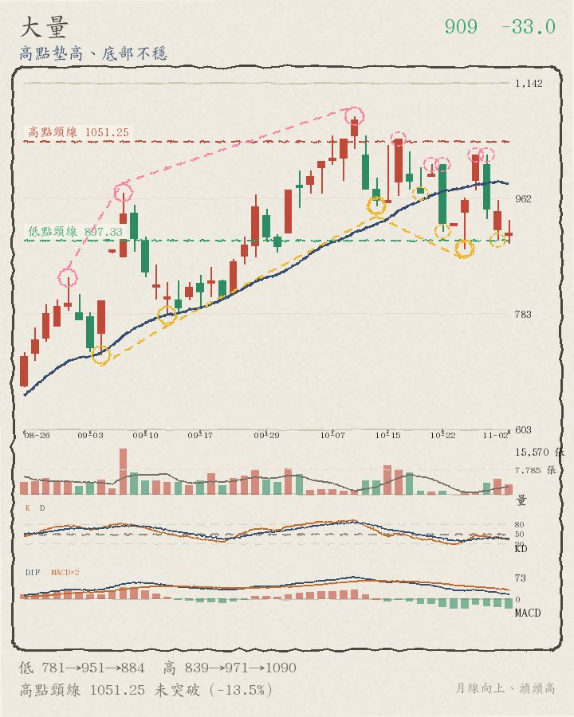
11:31 盤中 909（-3.50%），比加權指數弱 2.96 個百分點、跌破月線 988.75，離高點頸線 1051.25 還差 13.5%，高點還在墊高（但底部沒同步墊高）。
- 月線位置：現價 909 在月線 988.75 之下（-8.1%）；5 日線 960.4 也在月線之下（短均在下）；月線向上
- 量能：以已過交易時間推估，今天成交量約是 20 日均量的 1.57 倍（爆量），比 20 日均量大不少；下跌卻量增，量價背離
- 關鍵價位：高點頸線 1051.25 還沒突破，差 13.5%；前一交易日高點 960（低於 5.3%）；今天盤中高點 929（低於 2.2%）；今天盤中低點 892（高於 1.9%）
- 轉折結構：高點 839、971、1090 墊高（頭頭高），但低點 781、951、884 沒有同步墊高；還沒確認的轉折低點 10-27 884、10-30 897；還沒確認的轉折高點 10-28 1030、10-29 1030（圖上虛線小圈）
貿聯-KY 3665 上市
1630 +5.0（+0.31%）
區間或轉弱 盤中成交值 27.55 億・全榜第 45 名（上市第 38 名）・相對大盤 +0.85
好條件 1/7：守住今日高檔（距今日高點 1% 內）
不好條件 3/7：跌破前低、在月線之下、月線下彎
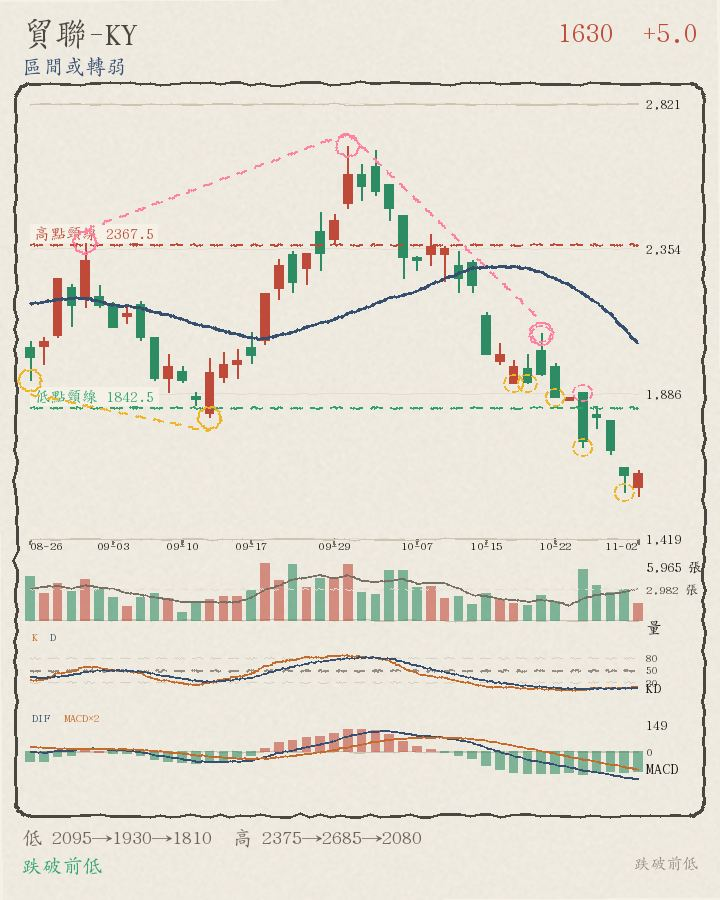
11:31 盤中 1630（+0.31%），比加權指數強 0.85 個百分點、跌破月線 2096.75，離高點頸線 2367.5 還差 31.2%，轉折還沒走出明顯方向。
- 月線位置：現價 1630 在月線 2096.75 之下（-22.3%）；5 日線 1750 也在月線之下（短均在下）；月線向下
- 量能：以已過交易時間推估，今天成交量約是 20 日均量的 0.97 倍（量平），跟 20 日均量差不多
- 關鍵價位：已跌破前一個轉折低點；高點頸線 2367.5 還在現價上方 31.2%；前一交易日高點 1650（低於 1.2%）；今天盤中高點 1640（低於 0.6%）；今天盤中低點 1555（高於 4.8%）
- 轉折結構：低點 2095、1930、1810 與高點 2375、2685、2080 都沒有明顯遞增，屬於區間震盪或轉弱；還沒確認的轉折低點 10-27 1715、10-30 1570；還沒確認的轉折高點 10-21 2080、10-27 1890（圖上虛線小圈）
世芯-KY 3661 上市
3450 +25.0（+0.73%）
區間或轉弱 盤中成交值 26.01 億・全榜第 46 名（上市第 39 名）・相對大盤 +1.27
好條件 1/7：守住今日高檔（距今日高點 1% 內）
不好條件 2/7：在月線之下、月線下彎
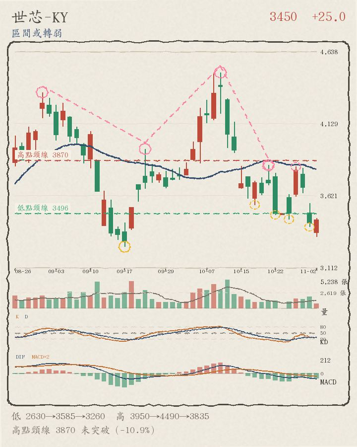
11:31 盤中 3450（+0.73%），比加權指數強 1.27 個百分點、跌破月線 3823.75，離高點頸線 3870 還差 10.9%，轉折還沒走出明顯方向。
- 月線位置：現價 3450 在月線 3823.75 之下（-9.8%）；5 日線 3579 也在月線之下（短均在下）；月線向下
- 量能：以已過交易時間推估，今天成交量約是 20 日均量的 0.63 倍（量縮），比 20 日均量少很多；上漲但量縮，量價背離
- 關鍵價位：高點頸線 3870 還沒突破，差 10.9%；前一交易日高點 3565（低於 3.2%）；今天盤中高點 3460（低於 0.3%）；今天盤中低點 3330（高於 3.6%）
- 轉折結構：低點 2630、3585、3260 與高點 3950、4490、3835 都沒有明顯遞增，屬於區間震盪或轉弱；還沒確認的轉折低點 10-27 3455、10-30 3400；還沒確認的轉折高點 10-21 3835、10-28 3825（圖上虛線小圈）
信驊 5274 上櫃
15875 -95.0（-0.59%）
區間或轉弱 盤中成交值 24.45 億・全榜第 47 名（上櫃第 8 名）・相對大盤 -0.05
好條件 0/7：無
不好條件 4/7：今日下跌、相對大盤弱、在月線之下、月線下彎
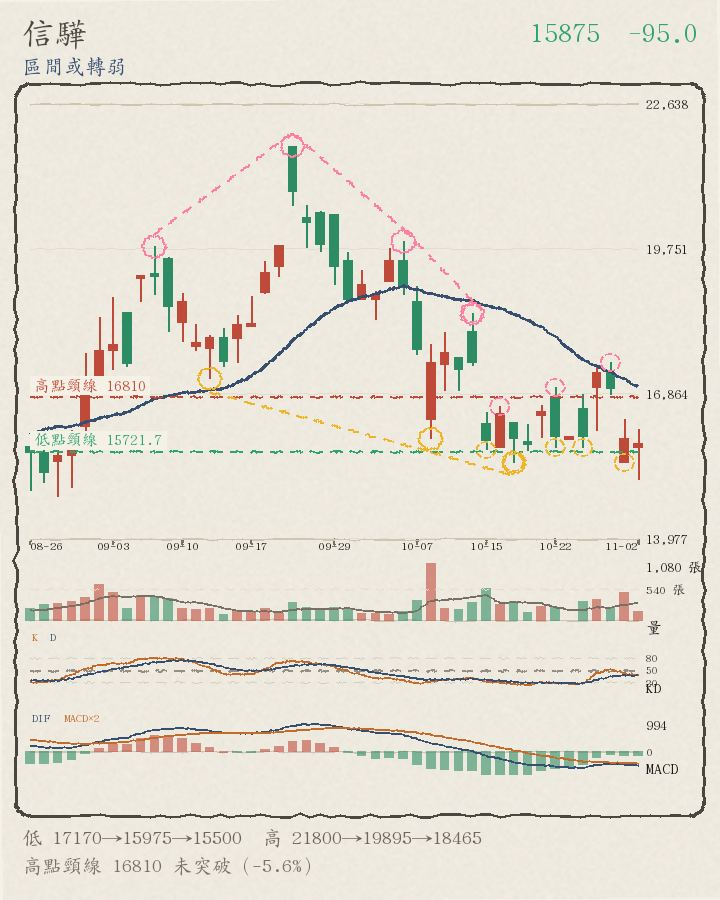
11:31 盤中 15875（-0.59%），比加權指數弱 0.05 個百分點、跌破月線 17163.2，離高點頸線 16810 還差 5.6%，轉折還沒走出明顯方向。
- 月線位置：現價 15875 在月線 17163.2 之下（-7.5%）；5 日線 16454 也在月線之下（短均在下）；月線向下
- 量能：以已過交易時間推估，今天成交量約是 20 日均量的 0.91 倍（量平），比 20 日均量少一些
- 關鍵價位：高點頸線 16810 還沒突破，差 5.6%；前一交易日高點 16365（低於 3.0%）；今天盤中高點 16160（低於 1.8%）；今天盤中低點 15155（高於 4.8%）
- 轉折結構：低點 17170、15975、15500 與高點 21800、19895、18465 都沒有明顯遞增，屬於區間震盪或轉弱；還沒確認的轉折低點 10-27 15800、10-30 15505；還沒確認的轉折高點 10-22 17000、10-29 17490（圖上虛線小圈）
量平
↑ 回上方清單
頎邦 6147 上櫃
196.5 +0.5（+0.26%）
高點墊高、底部不穩 盤中成交值 23.89 億・全榜第 48 名（上櫃第 9 名）・相對大盤 +0.80
好條件 2/7：頭頭高、守住今日高檔（距今日高點 1% 內）
不好條件 2/7：在月線之下、月線下彎
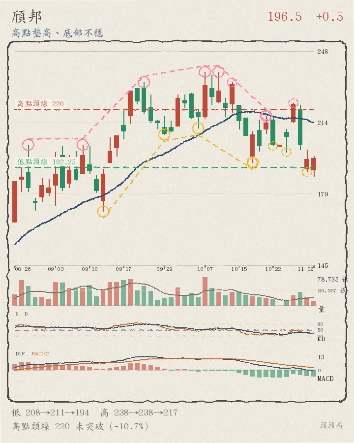
11:31 盤中 196.5（+0.26%），比加權指數強 0.80 個百分點、跌破月線 215.05，離高點頸線 220 還差 10.7%，高點還在墊高（但底部沒同步墊高）。
- 月線位置：現價 196.5 在月線 215.05 之下（-8.6%）；5 日線 206.3 也在月線之下（短均在下）；月線向下
- 量能：以已過交易時間推估，今天成交量約是 20 日均量的 0.68 倍（量縮），比 20 日均量少很多；上漲但量縮，量價背離
- 關鍵價位：高點頸線 220 還沒突破，差 10.7%；前一交易日高點 200.5（低於 2.0%）；今天盤中高點 197.5（低於 0.5%）；今天盤中低點 187.5（高於 4.8%）
- 轉折結構：高點 238、238、217 墊高（頭頭高），但低點 208、211、194.5 沒有同步墊高；還沒確認的轉折低點 10-27 199.5、10-30 190；還沒確認的轉折高點 10-21 217、10-28 223（圖上虛線小圈）
力旺 3529 上櫃
2395 -95.0（-3.82%）
高點墊高、底部不穩 盤中成交值 23.69 億・全榜第 49 名（上櫃第 10 名）・相對大盤 -3.28
好條件 1/7：頭頭高
不好條件 5/7：跌破前低、今日下跌、相對大盤弱、在月線之下、月線下彎
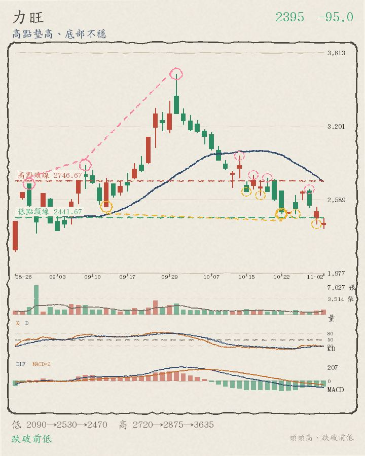
11:31 盤中 2395（-3.82%），比加權指數弱 3.28 個百分點、跌破月線 2783.25，離高點頸線 2746.67 還差 12.8%，高點還在墊高（但底部沒同步墊高）。
- 月線位置：現價 2395 在月線 2783.25 之下（-13.9%）；5 日線 2537 也在月線之下（短均在下）；月線向下
- 量能：以已過交易時間推估，今天成交量約是 20 日均量的 1.89 倍（爆量），比 20 日均量大不少；下跌卻量增，量價背離
- 關鍵價位：已跌破前一個轉折低點；高點頸線 2746.67 還在現價上方 12.8%；前一交易日高點 2530（低於 5.3%）；今天盤中高點 2435（低於 1.6%）；今天盤中低點 2345（高於 2.1%）
- 轉折結構：高點 2720、2875、3635 墊高（頭頭高），但低點 2090、2530、2470 沒有同步墊高；還沒確認的轉折低點 10-27 2470、10-30 2385；還沒確認的轉折高點 10-20 2770、10-29 2675（圖上虛線小圈）
瑞昱 2379 上市
784 -19.0（-2.37%）
上升趨勢（底底高＋頭頭高） 盤中成交值 22.09 億・全榜第 50 名（上市第 40 名）・相對大盤 -1.83
好條件 4/7：站上月線、月線向上、底底高、頭頭高
不好條件 2/7：今日下跌、相對大盤弱
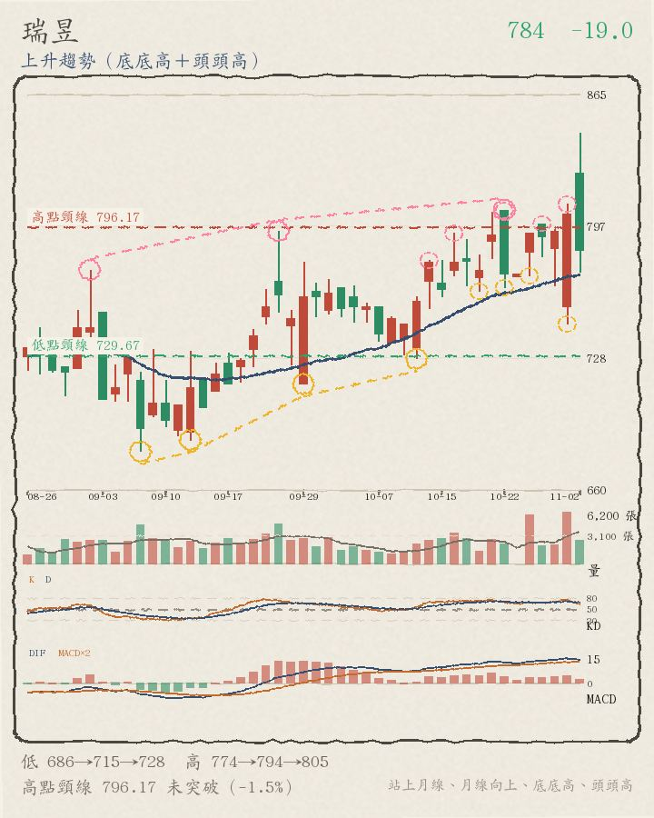
11:31 盤中 784（-2.37%），比加權指數弱 1.83 個百分點、站上月線 770.5，離高點頸線 796.17 還差 1.5%，轉折結構仍是底底高＋頭頭高。
- 月線位置：現價 784 在月線 770.5 之上（+1.8%）；5 日線 790.6 也在月線之上（短均在上）；月線向上
- 量能：以已過交易時間推估，今天成交量約是 20 日均量的 2.09 倍（爆量），比 20 日均量大不少；下跌卻量增，量價背離
- 關鍵價位：高點頸線 796.17 還沒突破，差 1.5%；前一交易日高點 808（低於 3.0%）；今天盤中高點 845（低於 7.2%）；今天盤中低點 773（高於 1.4%）
- 轉折結構：低點 686、715、728 一路墊高、高點 774、794、805 也一路墊高，是底底高＋頭頭高；還沒確認的轉折低點 10-27 771、10-30 746；還沒確認的轉折高點 10-28 798、10-30 808（圖上虛線小圈）
緯創 3231 上市
184 +0.5（+0.27%）
高點墊高、底部不穩 盤中成交值 21.6 億・全榜第 51 名（上市第 41 名）・相對大盤 +0.81
好條件 3/7：月線向上、頭頭高、守住今日高檔（距今日高點 1% 內）
不好條件 1/7：在月線之下
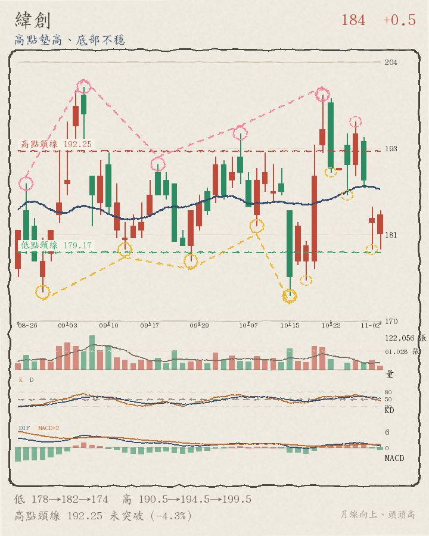
11:31 盤中 184（+0.27%），比加權指數強 0.81 個百分點、跌破月線 187.625，離高點頸線 192.25 還差 4.3%，高點還在墊高（但底部沒同步墊高）。
- 月線位置：現價 184 在月線 187.625 之下（-1.9%）；5 日線 189.4 也在月線之上（短均在上）；月線向上
- 量能：以已過交易時間推估，今天成交量約是 20 日均量的 0.52 倍（量縮），比 20 日均量少很多；上漲但量縮，量價背離
- 關鍵價位：高點頸線 192.25 還沒突破，差 4.3%；前一交易日高點 185（低於 0.5%）；今天盤中高點 184.5（低於 0.3%）；今天盤中低點 179.5（高於 2.5%）
- 轉折結構：高點 190.5、194.5、199.5 墊高（頭頭高），但低點 178、182.5、173.5 沒有同步墊高；還沒確認的轉折低點 10-27 186.5、10-30 179.5；還沒確認的轉折高點 10-21 199.5、10-28 196（圖上虛線小圈）
台塑化 6505 上市
103.5 +5.2（+5.29%）
底部墊高、未過前高 盤中成交值 21.53 億・全榜第 52 名（上市第 42 名）・相對大盤 +5.83
好條件 3/7：月線向上、底底高、守住今日高檔（距今日高點 1% 內）
不好條件 1/7：在月線之下
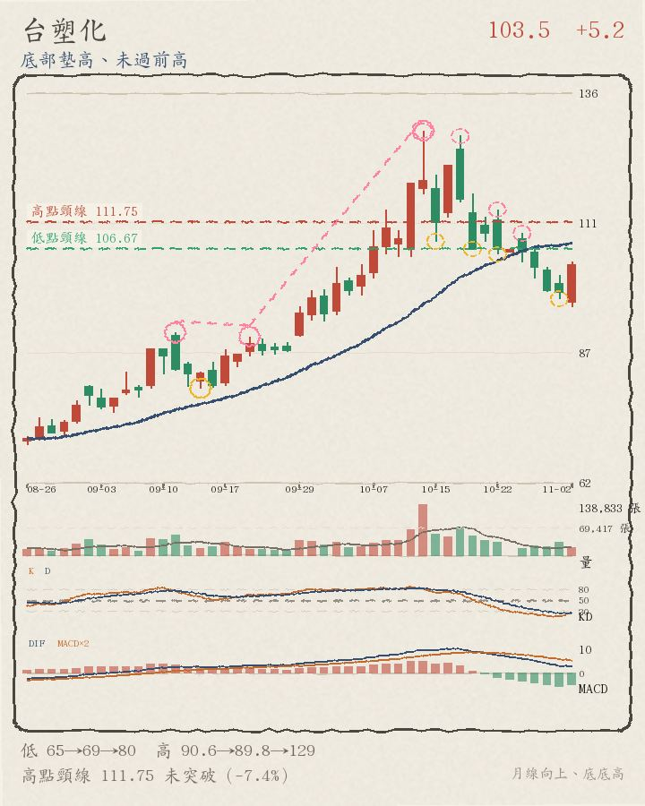
11:31 盤中 103.5（+5.29%），比加權指數強 5.83 個百分點、跌破月線 107.185，離高點頸線 111.75 還差 7.4%，底部還在墊高（但高點沒同步創高）。
- 月線位置：現價 103.5 在月線 107.185 之下（-3.4%）；5 日線 102.48 也在月線之下（短均在下）；月線向上
- 量能：以已過交易時間推估，今天成交量約是 20 日均量的 0.84 倍（量平），比 20 日均量少很多；上漲但量縮，量價背離
- 關鍵價位：高點頸線 111.75 還沒突破，差 7.4%；前一交易日高點 101.5（高於 2.0%）；今天盤中高點 104（低於 0.5%）；今天盤中低點 95.6（高於 8.3%）
- 轉折結構：低點 65.4、68.6、80 墊高（底底高），但高點 90.6、89.8、129 沒有同步創高；還沒確認的轉折低點 10-22 105.5、10-30 97；還沒確認的轉折高點 10-22 114、10-27 109.5（圖上虛線小圈）
京元電子 2449 上市
259.5 +6.0（+2.37%）
區間或轉弱 盤中成交值 21.38 億・全榜第 53 名（上市第 43 名）・相對大盤 +2.91
好條件 1/7：守住今日高檔（距今日高點 1% 內）
不好條件 2/7：在月線之下、月線下彎
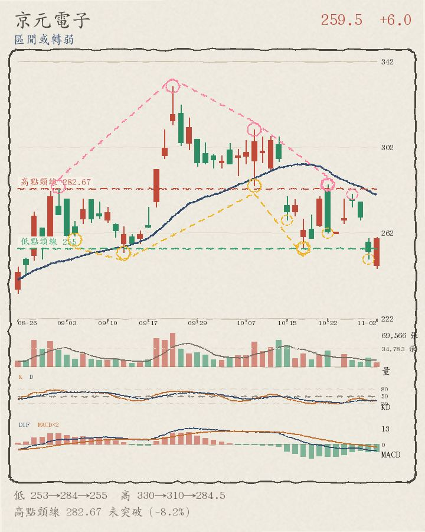
11:31 盤中 259.5（+2.37%），比加權指數強 2.91 個百分點、跌破月線 281.575，離高點頸線 282.67 還差 8.2%，轉折還沒走出明顯方向。
- 月線位置：現價 259.5 在月線 281.575 之下（-7.8%）；5 日線 266.4 也在月線之下（短均在下）；月線向下
- 量能：以已過交易時間推估，今天成交量約是 20 日均量的 0.57 倍（量縮），比 20 日均量少很多；上漲但量縮，量價背離
- 關鍵價位：高點頸線 282.67 還沒突破，差 8.2%；前一交易日高點 259.5（高於 0.0%）；今天盤中高點 260（低於 0.2%）；今天盤中低點 245.5（高於 5.7%）
- 轉折結構：低點 253、284、255 與高點 330、310、284.5 都沒有明顯遞增，屬於區間震盪或轉弱；還沒確認的轉折低點 10-22 262、10-30 250；還沒確認的轉折高點 10-22 284.5、10-28 280（圖上虛線小圈）
川湖 2059 上市
9470 -180.0（-1.87%）
區間或轉弱 盤中成交值 20.83 億・全榜第 54 名（上市第 44 名）・相對大盤 -1.33
好條件 0/7：無
不好條件 5/7：跌破前低、今日下跌、相對大盤弱、在月線之下、月線下彎

11:31 盤中 9470（-1.87%），比加權指數弱 1.33 個百分點、跌破月線 10613，離高點頸線 10348.3 還差 8.5%，轉折還沒走出明顯方向。
- 月線位置：現價 9470 在月線 10613 之下（-10.8%）；5 日線 9849 也在月線之下（短均在下）；月線向下
- 量能：以已過交易時間推估，今天成交量約是 20 日均量的 0.68 倍（量縮），比 20 日均量少很多
- 關鍵價位：已跌破前一個轉折低點；高點頸線 10348.3 還在現價上方 8.5%；前一交易日高點 9840（低於 3.8%）；今天盤中高點 9655（低於 1.9%）；今天盤中低點 9270（高於 2.2%）
- 轉折結構：低點 11665、11700、9500 與高點 13305、13500、10580 都沒有明顯遞增，屬於區間震盪或轉弱；還沒確認的轉折低點 10-27 9475、10-30 9345；還沒確認的轉折高點 10-21 10580、10-28 10290（圖上虛線小圈）
華通 2313 上市
205.5 +3.5（+1.73%）
上升趨勢（底底高＋頭頭高） 盤中成交值 19.91 億・全榜第 55 名（上市第 45 名）・相對大盤 +2.27
好條件 2/7：底底高、頭頭高
不好條件 3/7：跌破前低、在月線之下、月線下彎
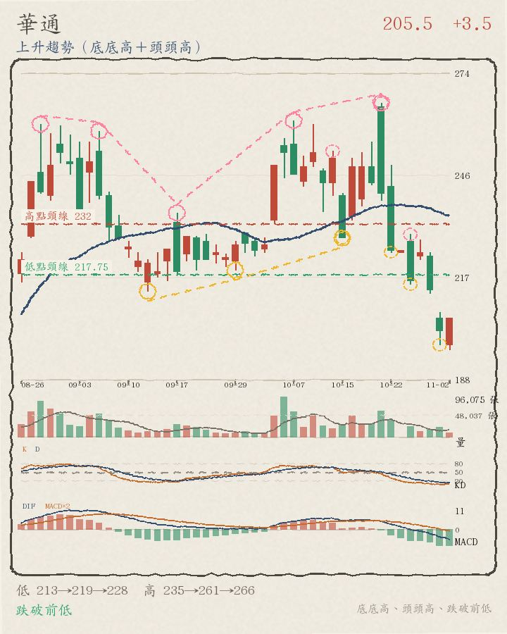
11:31 盤中 205.5（+1.73%），比加權指數強 2.27 個百分點、跌破月線 235.175，離高點頸線 232 還差 11.4%，轉折結構仍是底底高＋頭頭高。
- 月線位置：現價 205.5 在月線 235.175 之下（-12.6%）；5 日線 216 也在月線之下（短均在下）；月線向下
- 量能：以已過交易時間推估，今天成交量約是 20 日均量的 0.51 倍（量縮），比 20 日均量少很多；上漲但量縮，量價背離
- 關鍵價位：已跌破前一個轉折低點；高點頸線 232 還在現價上方 11.4%；前一交易日高點 207（低於 0.7%）；今天盤中高點 205.5（高於 0.0%）；今天盤中低點 196.5（高於 4.6%）
- 轉折結構：低點 213、219、228 一路墊高、高點 235、261、266 也一路墊高，是底底高＋頭頭高；還沒確認的轉折低點 10-27 215、10-30 198；還沒確認的轉折高點 10-21 266、10-27 229（圖上虛線小圈）
長榮 2603 上市
273.5 +2.0（+0.74%）
上升趨勢（底底高＋頭頭高） 盤中成交值 19.62 億・全榜第 56 名（上市第 46 名）・相對大盤 +1.28
好條件 6/7：站上月線、月線向上、底底高、頭頭高、突破頸線、守住今日高檔（距今日高點 1% 內）
不好條件 0/7：無
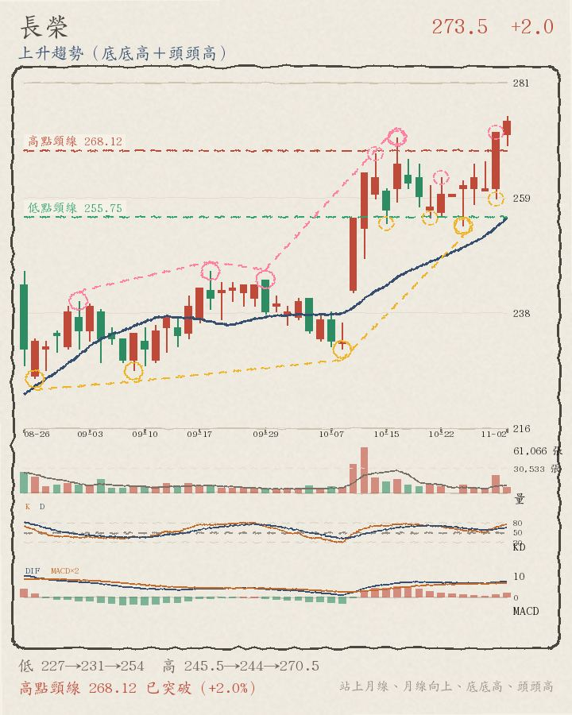
11:31 盤中 273.5（+0.74%），比加權指數強 1.28 個百分點、站上月線 253.75，已突破高點頸線 268.12，轉折結構仍是底底高＋頭頭高。
- 月線位置：現價 273.5 在月線 253.75 之上（+7.8%）；5 日線 263.4 也在月線之上（短均在上）；月線向上
- 量能：以已過交易時間推估，今天成交量約是 20 日均量的 0.96 倍（量平），跟 20 日均量差不多
- 關鍵價位：高點頸線 268.12 已站上；前一交易日高點 271.5（高於 0.7%）；今天盤中高點 274.5（低於 0.4%）；今天盤中低點 269（高於 1.7%）
- 轉折結構：低點 227、231、254 一路墊高、高點 245.5、244、270.5 也一路墊高，是底底高＋頭頭高；還沒確認的轉折低點 10-27 254、10-30 259；還沒確認的轉折高點 10-22 263、10-30 271.5（圖上虛線小圈）
旺宏 2337 上市
95.2 -0.2（-0.21%）
區間或轉弱 盤中成交值 19.62 億・全榜第 57 名（上市第 47 名）・相對大盤 +0.33
好條件 0/7：無
不好條件 4/7：跌破前低、今日下跌、在月線之下、月線下彎
11:31 盤中 95.2（-0.21%），比加權指數強 0.33 個百分點、跌破月線 108.37，離高點頸線 108.25 還差 12.1%，轉折還沒走出明顯方向。
- 月線位置：現價 95.2 在月線 108.37 之下（-12.2%）；5 日線 100.28 也在月線之下（短均在下）；月線向下
- 量能：以已過交易時間推估，今天成交量約是 20 日均量的 1.14 倍（量增），比 20 日均量大一些；下跌卻量增，量價背離
- 關鍵價位：已跌破前一個轉折低點；高點頸線 108.25 還在現價上方 12.1%；前一交易日高點 97.4（低於 2.3%）；今天盤中高點 96.4（低於 1.2%）；今天盤中低點 93.5（高於 1.8%）
- 轉折結構：低點 114、114.5、99.2 與高點 130、124.5、123 都沒有明顯遞增，屬於區間震盪或轉弱；還沒確認的轉折低點 10-23 99.5、10-30 93.2；還沒確認的轉折高點 10-21 104.5、10-28 107.5（圖上虛線小圈）
華星光 4979 上櫃
433 -14.0（-3.13%）
區間或轉弱 盤中成交值 19.59 億・全榜第 58 名（上櫃第 11 名）・相對大盤 -2.59
好條件 0/7：無
不好條件 6/7：跌破前低、今日下跌、相對大盤弱、在月線之下、跌破昨日低點、月線下彎
11:31 盤中 433（-3.13%），比加權指數弱 2.59 個百分點、跌破月線 521.85，離高點頸線 654 還差 33.8%，轉折還沒走出明顯方向。
- 月線位置：現價 433 在月線 521.85 之下（-17.0%）；5 日線 466 也在月線之下（短均在下）；月線向下
- 量能：以已過交易時間推估，今天成交量約是 20 日均量的 1.73 倍（爆量），比 20 日均量大不少；下跌卻量增，量價背離
- 關鍵價位：已跌破前一個轉折低點；高點頸線 654 還在現價上方 33.8%；前一交易日高點 461（低於 6.1%）；今天盤中高點 450（低於 3.8%）；今天盤中低點 423（高於 2.4%）
- 轉折結構：低點 501、545、445 與高點 650、622、588 都沒有明顯遞增，屬於區間震盪或轉弱；還沒確認的轉折低點 10-27 450、10-30 436.5；還沒確認的轉折高點 10-22 490、10-29 531（圖上虛線小圈）
全新 2455 上市
446 -1.0（-0.22%）
高點墊高、底部不穩 盤中成交值 19.31 億・全榜第 59 名（上市第 48 名）・相對大盤 +0.32
好條件 2/7：頭頭高、守住今日高檔（距今日高點 1% 內）
不好條件 4/7：跌破前低、今日下跌、在月線之下、月線下彎
11:31 盤中 446（-0.22%），比加權指數強 0.32 個百分點、跌破月線 514.9，離高點頸線 547.67 還差 18.6%，高點還在墊高（但底部沒同步墊高）。
- 月線位置：現價 446 在月線 514.9 之下（-13.4%）；5 日線 475.2 也在月線之下（短均在下）；月線向下
- 量能：以已過交易時間推估，今天成交量約是 20 日均量的 1.08 倍（量平），比 20 日均量大一些
- 關鍵價位：已跌破前一個轉折低點；高點頸線 547.67 還在現價上方 18.6%；前一交易日高點 462（低於 3.5%）；今天盤中高點 449.5（低於 0.8%）；今天盤中低點 427（高於 4.4%）
- 轉折結構：高點 590、613、510 墊高（頭頭高），但低點 493、530、459 沒有同步墊高；還沒確認的轉折低點 10-27 458、10-30 436；還沒確認的轉折高點 10-20 510、10-29 536（圖上虛線小圈）
富世達 6805 上市
2350 -35.0（-1.47%）
區間或轉弱 盤中成交值 19.08 億・全榜第 60 名（上市第 49 名）・相對大盤 -0.93
好條件 1/7：站上月線
不好條件 3/7：今日下跌、相對大盤弱、月線下彎
11:31 盤中 2350（-1.47%），比加權指數弱 0.93 個百分點、站上月線 2332，離高點頸線 2487.5 還差 5.5%，轉折還沒走出明顯方向。
- 月線位置：現價 2350 在月線 2332 之上（+0.8%）；5 日線 2371 也在月線之上（短均在上）；月線向下
- 量能：以已過交易時間推估，今天成交量約是 20 日均量的 0.93 倍（量平），比 20 日均量少一些
- 關鍵價位：高點頸線 2487.5 還沒突破，差 5.5%；前一交易日高點 2410（低於 2.5%）；今天盤中高點 2405（低於 2.3%）；今天盤中低點 2260（高於 4.0%）
- 轉折結構：低點 2300、2065、2200 與高點 2750、2510、2515 都沒有明顯遞增，屬於區間震盪或轉弱；還沒確認的轉折低點 10-27 2200、10-30 2225；還沒確認的轉折高點 10-22 2515、10-29 2490（圖上虛線小圈）
台虹 8039 上市
245.5 +0.5（+0.20%）
區間或轉弱 盤中成交值 19.07 億・全榜第 61 名（上市第 50 名）・相對大盤 +0.74
好條件 0/7：無
不好條件 3/7：跌破前低、在月線之下、月線下彎
11:31 盤中 245.5（+0.20%），比加權指數強 0.74 個百分點、跌破月線 286.075，離高點頸線 328.5 還差 25.3%，轉折還沒走出明顯方向。
- 月線位置：現價 245.5 在月線 286.075 之下（-14.2%）；5 日線 260.9 也在月線之下（短均在下）；月線向下
- 量能：以已過交易時間推估，今天成交量約是 20 日均量的 0.38 倍（量縮），比 20 日均量少很多；上漲但量縮，量價背離
- 關鍵價位：已跌破前一個轉折低點；高點頸線 328.5 還在現價上方 25.3%；前一交易日高點 256.5（低於 4.3%）；今天盤中高點 245.5（高於 0.0%）；今天盤中低點 234.5（高於 4.7%）
- 轉折結構：低點 256.5、253、268.5 與高點 327.5、331.5、328.5 都沒有明顯遞增，屬於區間震盪或轉弱；還沒確認的轉折低點 10-27 253、10-30 243.5；還沒確認的轉折高點 10-20 328.5、10-28 275（圖上虛線小圈）
旺矽 6223 上櫃
4730 +120.0（+2.60%）
區間或轉弱 盤中成交值 14.9 億・全榜第 62 名（上櫃第 12 名）・相對大盤 +3.14
好條件 1/7：守住今日高檔（距今日高點 1% 內）
不好條件 3/7：跌破前低、在月線之下、月線下彎
11:31 盤中 4730（+2.60%），比加權指數強 3.14 個百分點、跌破月線 5268.5，離高點頸線 5230 還差 9.6%，轉折還沒走出明顯方向。
- 月線位置：現價 4730 在月線 5268.5 之下（-10.2%）；5 日線 4849 也在月線之下（短均在下）；月線向下
- 量能：以已過交易時間推估，今天成交量約是 20 日均量的 0.63 倍（量縮），比 20 日均量少很多；上漲但量縮，量價背離
- 關鍵價位：已跌破前一個轉折低點；高點頸線 5230 還在現價上方 9.6%；前一交易日高點 4670（高於 1.3%）；今天盤中高點 4745（低於 0.3%）；今天盤中低點 4480（高於 5.6%）
- 轉折結構：低點 5365、5090、4995 與高點 6060、5860、6160 都沒有明顯遞增，屬於區間震盪或轉弱；還沒確認的轉折低點 10-27 4730、10-30 4390；還沒確認的轉折高點 10-22 5170、10-29 5150（圖上虛線小圈）
欣銓 3264 上櫃
217 -3.5（-1.59%）
區間或轉弱 盤中成交值 14.33 億・全榜第 63 名（上櫃第 13 名）・相對大盤 -1.05
好條件 0/7：無
不好條件 5/7：跌破前低、今日下跌、相對大盤弱、在月線之下、月線下彎
11:31 盤中 217（-1.59%），比加權指數弱 1.05 個百分點、跌破月線 251.75，離高點頸線 256.5 還差 15.4%，轉折還沒走出明顯方向。
- 月線位置：現價 217 在月線 251.75 之下（-13.8%）；5 日線 237.8 也在月線之下（短均在下）；月線向下
- 量能：以已過交易時間推估，今天成交量約是 20 日均量的 0.60 倍（量縮），比 20 日均量少很多
- 關鍵價位：已跌破前一個轉折低點；高點頸線 256.5 還在現價上方 15.4%；前一交易日高點 229（低於 5.2%）；今天盤中高點 221（低於 1.8%）；今天盤中低點 210.5（高於 3.1%）
- 轉折結構：低點 238、238、241.5 與高點 289.5、291.5、279.5 都沒有明顯遞增，屬於區間震盪或轉弱；還沒確認的轉折低點 10-28 234.5、10-30 216；還沒確認的轉折高點 10-22 279.5、10-27 261.5（圖上虛線小圈）
世界 5347 上櫃
146.5 +2.5（+1.74%）
底部墊高、未過前高 盤中成交值 12.9 億・全榜第 64 名（上櫃第 14 名）・相對大盤 +2.28
好條件 2/7：底底高、守住今日高檔（距今日高點 1% 內）
不好條件 3/7：跌破前低、在月線之下、月線下彎
11:31 盤中 146.5（+1.74%），比加權指數強 2.28 個百分點、跌破月線 171.275，離高點頸線 170 還差 13.8%，底部還在墊高（但高點沒同步創高）。
- 月線位置：現價 146.5 在月線 171.275 之下（-14.5%）；5 日線 158.1 也在月線之下（短均在下）；月線向下
- 量能：以已過交易時間推估，今天成交量約是 20 日均量的 1.07 倍（量平），比 20 日均量大一些
- 關鍵價位：已跌破前一個轉折低點；高點頸線 170 還在現價上方 13.8%；前一交易日高點 150.5（低於 2.7%）；今天盤中高點 147（低於 0.3%）；今天盤中低點 141（高於 3.9%）
- 轉折結構：低點 147、152.5、159 墊高（底底高），但高點 195、170、170 沒有同步創高；還沒確認的轉折低點 10-27 158、10-30 141；還沒確認的轉折高點 10-22 170、10-28 170（圖上虛線小圈）
威剛 3260 上櫃
339.5 -7.0（-2.02%）
區間或轉弱 盤中成交值 12.25 億・全榜第 65 名（上櫃第 15 名）・相對大盤 -1.48
好條件 0/7：無
不好條件 5/7：今日下跌、相對大盤弱、在月線之下、跌破昨日低點、月線下彎
11:31 盤中 339.5（-2.02%），比加權指數弱 1.48 個百分點、跌破月線 355.35，離高點頸線 382 還差 11.1%，轉折還沒走出明顯方向。
- 月線位置：現價 339.5 在月線 355.35 之下（-4.5%）；5 日線 346.1 也在月線之下（短均在下）；月線向下
- 量能：以已過交易時間推估，今天成交量約是 20 日均量的 1.25 倍（量增），比 20 日均量大不少；下跌卻量增，量價背離
- 關鍵價位：高點頸線 382 還沒突破，差 11.1%；前一交易日高點 357（低於 4.9%）；今天盤中高點 346（低於 1.9%）；今天盤中低點 333（高於 2.0%）
- 轉折結構：低點 327、328、328 與高點 428、405.5、385.5 都沒有明顯遞增，屬於區間震盪或轉弱；還沒確認的轉折低點 10-27 328、10-30 343；還沒確認的轉折高點 10-16 367、10-29 378.5（圖上虛線小圈）
量增
↑ 回上方清單
大甲 2221 上櫃
145.5 -3.0（-2.02%）
底部墊高、未過前高 盤中成交值 12.18 億・全榜第 66 名（上櫃第 16 名）・相對大盤 -1.48
好條件 2/7：底底高、突破頸線
不好條件 5/7：今日下跌、相對大盤弱、在月線之下、跌破昨日低點、月線下彎
11:31 盤中 145.5（-2.02%），比加權指數弱 1.48 個百分點、跌破月線 153.1，已突破高點頸線 136.25，底部還在墊高（但高點沒同步創高）。
- 月線位置：現價 145.5 在月線 153.1 之下（-5.0%）；5 日線 142.8 也在月線之下（短均在下）；月線向下
- 量能：以已過交易時間推估，今天成交量約是 20 日均量的 10.23 倍（爆量），比 20 日均量大不少；下跌卻量增，量價背離
- 關鍵價位：高點頸線 136.25 已站上；前一交易日高點 168（低於 13.4%）；今天盤中高點 161（低於 9.6%）；今天盤中低點 144（高於 1.0%）
- 轉折結構：低點 42.1、110、123.5 墊高（底底高），但高點 198、195、195 沒有同步創高；還沒確認的轉折低點 10-27 123.5、10-30 148.5；還沒確認的轉折高點 10-21 135、10-30 168（圖上虛線小圈）
合晶 6182 上櫃
94.8 +0.9（+0.96%）
區間或轉弱 盤中成交值 12.05 億・全榜第 67 名（上櫃第 17 名）・相對大盤 +1.50
好條件 0/7：無
不好條件 3/7：跌破前低、在月線之下、月線下彎
11:31 盤中 94.8（+0.96%），比加權指數強 1.50 個百分點、跌破月線 115.095，離高點頸線 140 還差 32.3%，轉折還沒走出明顯方向。
- 月線位置：現價 94.8 在月線 115.095 之下（-17.6%）；5 日線 101.18 也在月線之下（短均在下）；月線向下
- 量能：以已過交易時間推估，今天成交量約是 20 日均量的 0.41 倍（量縮），比 20 日均量少很多；上漲但量縮，量價背離
- 關鍵價位：已跌破前一個轉折低點；高點頸線 140 還在現價上方 32.3%；前一交易日高點 97（低於 2.3%）；今天盤中高點 95.8（低於 1.0%）；今天盤中低點 90.2（高於 5.1%）
- 轉折結構：低點 104、100、103.5 與高點 140、140、113 都沒有明顯遞增，屬於區間震盪或轉弱；還沒確認的轉折低點 10-27 100.5、10-30 92.4；還沒確認的轉折高點 10-22 113、10-27 107.5（圖上虛線小圈）
信昌電 6173 上櫃
260.5 -10.0（-3.70%）
區間或轉弱 盤中成交值 10.89 億・全榜第 68 名（上櫃第 18 名）・相對大盤 -3.16
好條件 0/7：無
不好條件 5/7：今日下跌、相對大盤弱、在月線之下、跌破昨日低點、月線下彎
11:31 盤中 260.5（-3.70%），比加權指數弱 3.16 個百分點、跌破月線 295.44，離高點頸線 305.04 還差 14.6%，轉折還沒走出明顯方向。
- 月線位置：現價 260.5 在月線 295.44 之下（-11.8%）；5 日線 285.7 也在月線之下（短均在下）；月線向下
- 量能：以已過交易時間推估，今天成交量約是 20 日均量的 0.55 倍（量縮），比 20 日均量少很多
- 關鍵價位：高點頸線 305.04 還沒突破，差 14.6%；前一交易日高點 287.5（低於 9.4%）；今天盤中高點 264（低於 1.3%）；今天盤中低點 252.5（高於 3.2%）
- 轉折結構：低點 302.128、302.128、248 與高點 302.128、302.128、312.5 都沒有明顯遞增，屬於區間震盪或轉弱；還沒確認的轉折低點 10-27 274.5、10-30 268.5；還沒確認的轉折高點 10-27 309.5、10-29 306（圖上虛線小圈）
量縮
↑ 回上方清單
萬潤 6187 上櫃
1200 +10.0（+0.84%）
區間或轉弱 盤中成交值 10.18 億・全榜第 69 名（上櫃第 19 名）・相對大盤 +1.38
好條件 2/7：月線向上、守住今日高檔（距今日高點 1% 內）
不好條件 1/7：在月線之下
11:31 盤中 1200（+0.84%），比加權指數強 1.38 個百分點、跌破月線 1399.25，離高點頸線 1440 還差 16.7%，轉折還沒走出明顯方向。
- 月線位置：現價 1200 在月線 1399.25 之下（-14.2%）；5 日線 1268 也在月線之下（短均在下）；月線向上
- 量能：以已過交易時間推估，今天成交量約是 20 日均量的 0.51 倍（量縮），比 20 日均量少很多；上漲但量縮，量價背離
- 關鍵價位：高點頸線 1440 還沒突破，差 16.7%；前一交易日高點 1210（低於 0.8%）；今天盤中高點 1205（低於 0.4%）；今天盤中低點 1145（高於 4.8%）
- 轉折結構：低點 1185、1180、1180 與高點 1435、1270、1680 都沒有明顯遞增，屬於區間震盪或轉弱；還沒確認的轉折低點 10-27 1245、10-30 1135；還沒確認的轉折高點 10-20 1430、10-28 1360（圖上虛線小圈）
上詮 3363 上櫃
451 -23.5（-4.95%）
區間或轉弱 盤中成交值 9.9 億・全榜第 70 名（上櫃第 20 名）・相對大盤 -4.41
好條件 0/7：無
不好條件 5/7：跌破前低、今日下跌、相對大盤弱、在月線之下、月線下彎
11:31 盤中 451（-4.95%），比加權指數弱 4.41 個百分點、跌破月線 567.05，離高點頸線 545 還差 17.2%，轉折還沒走出明顯方向。
- 月線位置：現價 451 在月線 567.05 之下（-20.5%）；5 日線 500.6 也在月線之下（短均在下）；月線向下
- 量能：以已過交易時間推估，今天成交量約是 20 日均量的 1.62 倍（爆量），比 20 日均量大不少；下跌卻量增，量價背離
- 關鍵價位：已跌破前一個轉折低點；高點頸線 545 還在現價上方 17.2%；前一交易日高點 488.5（低於 7.7%）；今天盤中高點 462.5（低於 2.5%）；今天盤中低點 439（高於 2.7%）
- 轉折結構：低點 647、647、629 與高點 699、693、555 都沒有明顯遞增，屬於區間震盪或轉弱；還沒確認的轉折低點 10-27 499.5、10-30 448；還沒確認的轉折高點 10-22 555、10-29 537（圖上虛線小圈）